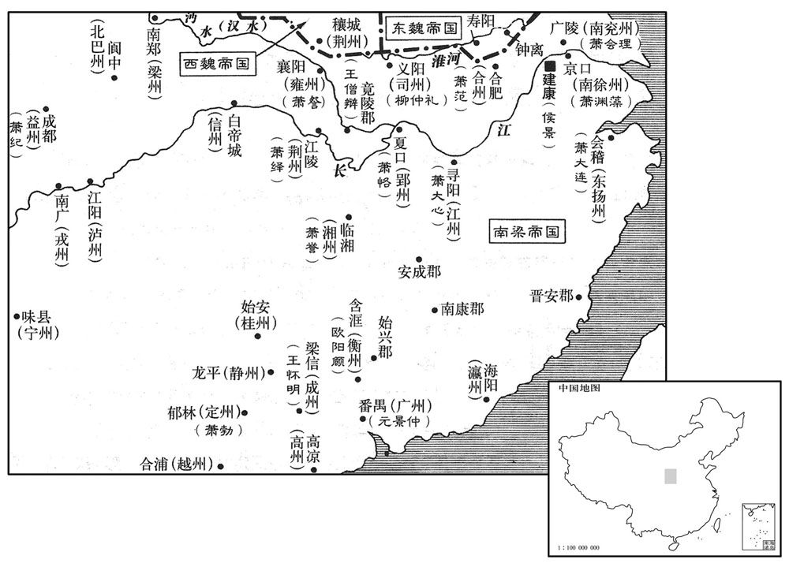
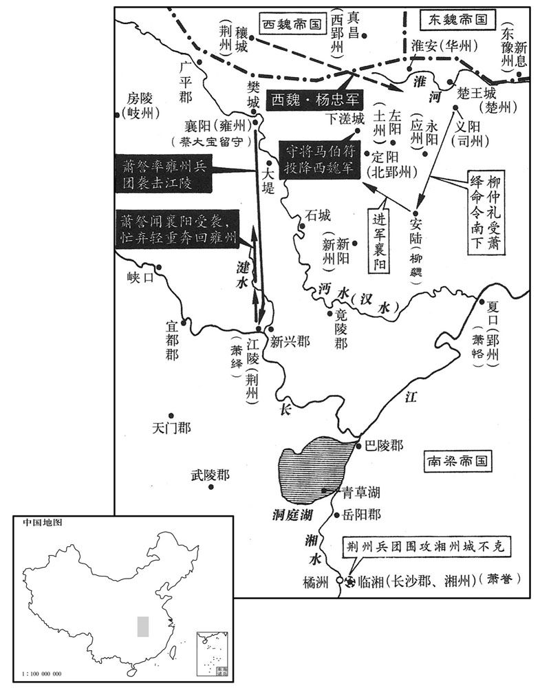
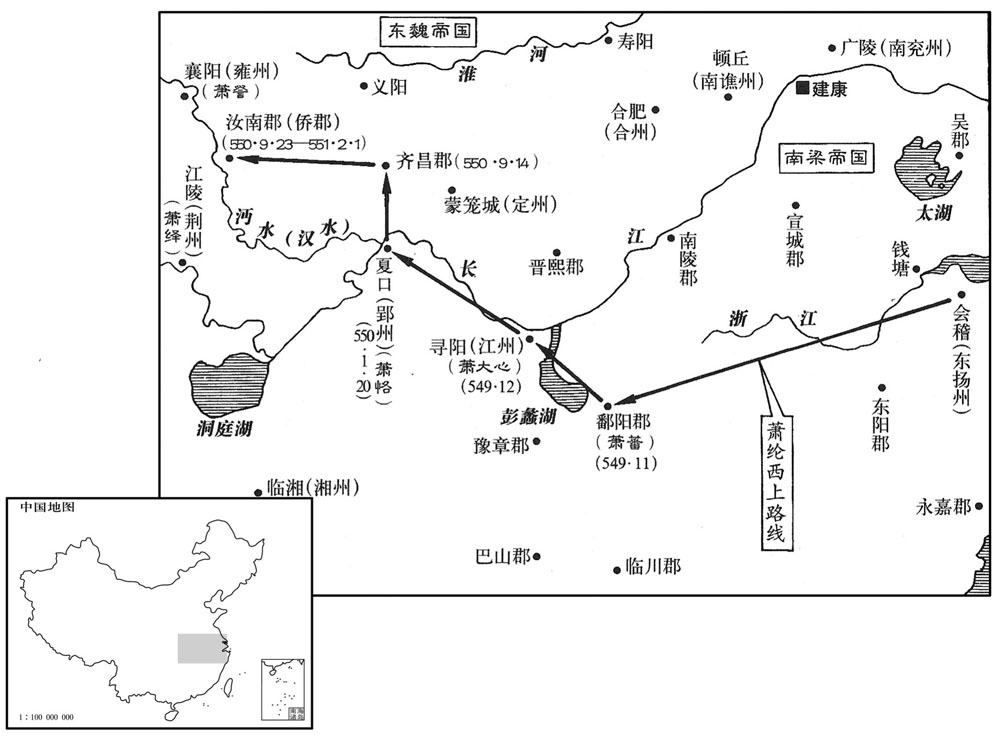
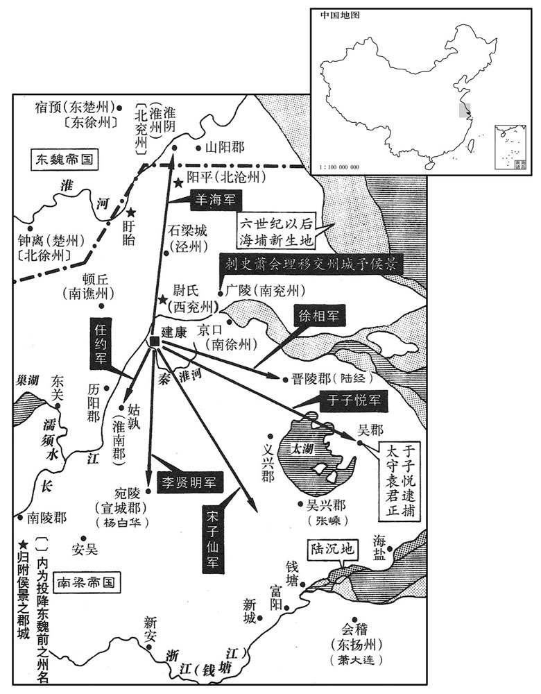

卷次与人物目录 / 卷162
资治通鉴 · 卷第一百六十二【梁纪十八】
公元549年至公元549年 · 原文、白话与胡三省注
本页按胡注本编排保存全卷内容。白话采用本站所据译本，未可靠对应的内容另列说明；事件标题用于定位，并非原书文字。
本卷共97段原文，95段有译文对应，2段缺译或待核对。
卷第一百六十二【梁纪十八】屠维大荒落（己巳），一年。
卷首原文与注释
高祖武皇帝十八
公元549年 · 梁高祖武皇帝太清三年
太清三年〔（己巳，五四九）〕
上传原文的注释括号有异常，字符原样保留；无法可靠划分的段落默认全文显示。
本年事件索引（现代整理）
- 柳仲礼移营大桁，韦粲战死
- 萧纶收拢散兵援建康
- 朱异因侯景之乱惭愤病死
- 萧正表率北徐州降东魏
- 梁太子迁居永福省与援军联络
- 梁援军渡秦淮，樊文皎战死
- 柳仲礼骄横，各军互相猜阻
- 王显贵以寿阳降东魏
- 顾野王起兵援台城，侯景假意求和
- 萧会理等援军进驻马卬洲
- 梁任萧纶为司空萧范为征北将军
- 侯景请求借广陵谯州安置军队
- 梁朝大赦
- 侯景以调任为名召萧确入城
- 梁武帝围城缺粮，改食鸡蛋
- 萧绎等各路援军迟疑不进
- 河内民众归附西魏司马裔
- 侯景运米入石头后拒绝退兵
- 梁武帝怒览侯景檄书，台城军民困死
- 萧会理援军攻东府失败
- 侯景再次求和，沈浚斥责不屈
- 侯景决水攻破台城，梁武帝自叹得失
- 侯景入宫朝见梁武帝
- 侯景拜见太子萧纲
- 侯景畏惧梁武帝，纵兵劫掠宫禁
- 建康士民四散逃难
- 侯景诏令解散援军，柳仲礼等投降
- 王琳运粮至姑孰，台城陷后沉米而返
- 侯景焚烧台城内尸体
- 梁朝征召镇牧，侯景改任百官
- 秦郡阳平盱眙三郡降侯景
- 湛海珍王奉伯以州降东魏
- 侯景任萧邕为南徐州刺史
- 萧誉与张缵争夺湘州，萧绎杀萧慥
- 侯景遣董绍先夺取广陵
- 萧退萧祗逃奔东魏
- 侯景派兵东掠吴郡，袁君正迎降
- 萧方等抵江陵，萧绎设防
- 东魏攻颍川失利，慕容绍宗刘丰生溺死
- 东魏进高澄为相国齐王
- 萧詧拒绝代任，张缵逃入西山
- 荆州属官请萧绎出任盟主被拒
- 侯景控制梁宫，梁武帝忧愤去世
- 高澄因慕容绍宗死而亲攻长社
- 侯景为梁武帝发丧，萧纲即位
- 梁简文帝释放南朝奴籍北人
- 梁武帝末年建康奢靡，粮储不足
- 侯景势力控制吴郡以西
- 西魏恢复代人旧姓
- 梁任萧会理为侍中司空
- 梁立萧大器为太子
- 刘之遴拒授玺绶逃走，被萧绎毒杀
- 梁封诸王为郡王
- 长社粮盐俱绝，王思政出降
- 王思政请求以长社为行台治所
- 西魏因颍川陷落撤守诸城
- 萧韶逃到江陵请奉密诏征兵
- 宋子仙围吴郡，陆缉起兵杀苏单于
- 萧正德密召萧范被侯景缢杀，侯景杀萧确
- 萧绎迎娶徐妃并派萧方等讨湘州
- 侯景任赵威方为豫章太守被擒逃回
- 萧方等攻湘州兵败溺死，徐妃被迫自杀
- 陈霸先讨伐元景仲平定广州
- 兰裕等煽动十郡叛乱被陈霸先擒获
- 萧绎派王僧辩鲍泉攻湘州
- 陆缉败退，侯景设吴州
- 梁任萧会理兼尚书令
- 萧范戒严出兵求援东魏失败
- 高澄入邺请立太子并辞殊礼
- 侯景派侯子鉴攻吴兴
- 鲍泉击败萧誉，围攻长沙
- 东魏立元长仁为太子
- 高洋韬光养晦以避高澄猜忌
- 兰京杀高澄，高洋平乱秘不发丧
- 高洋连夜部署晋阳军队
- 高洋借立太子大赦并接掌晋阳
- 侯景任宋子仙郭元建为高官
- 萧范遣使联络萧大心
- 张嵊拒降侯景，吴兴城破殉节
- 萧詧出兵救萧誉，围攻江陵
- 王僧辩奉命代鲍泉围攻长沙
- 东魏任潘相乐为司空
- 庄铁降而复叛，袭击寻阳失败
- 宋子仙从吴郡进攻钱塘
- 梁武帝葬于修陵，庙号高祖
- 百济使者入贡见建康残破
- 宋子仙急攻钱塘，戴僧籂投降
- 萧詧遣薛晖攻克广平
- 萧詧向西魏求援，杨忠出兵救援
- 宋子仙渡浙江进会稽，萧纶逃走
- 杨忠攻取义阳，马伯符投降
- 萧大连失守会稽，三吴尽陷侯景
- 东魏任彭乐为司徒
- 萧纶到九江，萧大心让出江州
- 陈霸先集结始兴豪杰讨伐侯景
- 杨忠攻取随郡擒桓和
- 东魏潘乐率五万攻司州，尽有淮南
春，正月，丁巳朔，柳仲礼自新亭徙营大桁。会大雾，韦粲军迷失道，比及青塘，〔比，必利翻。〕夜已过半，立栅未合，侯景望见之，亟帅锐卒攻粲。〔过，工禾翻。帅，读曰率。〕粲使军主郑逸逆击之，命刘叔胤以舟师截其后，〔截其渡淮之路。〕叔胤畏懦不敢进，逸遂败。掠乘胜入粲营，左右牵粲避贼，粲不动，叱子弟力战，遂与子尼及三弟助、警、构、从弟昂皆战死，〔从，才用翻。〕亲戚死者数百人。〔史言韦粲忠勇。〕仲礼方食，投箸被甲，与其麾下百骑驰往救之，〔箸，竹助翻。被，皮义翻。骑，奇寄翻。〕与景战于青塘，大破之，斩首数百级，沈淮水死者千余人。〔沈，持林翻。〕仲礼抬将及景，〔抬，色角翻。〕而贼将支伯仁自后斫仲礼中肩，马陷于淖，〔「支伯仁」，当作「支化仁」，将，即亮翻；下同。中，竹仲翻。淖，奴教翻，泥也。〕贼聚抬刺之，骑将郭山石救之，得免。仲礼被重疮，会稽人惠珔允疮断血，〔刺，七亦翻。被，皮义翻。珔，徂闷翻。吮，徂兖翻。〕故得不死。自是景不敢复济南岸，〔复，扶又翻；下不复、纶复同。〕仲礼亦气索，〔索，苏各翻。〕不复言战矣。
春季，正月，丁巳朔（初一），柳仲礼将新亭的军营迁往大桁。这一天遇上有大雾，书粲的军队的在路上迷失了方向，等他们到达青塘的时候，已经过了半夜。军营外围扎下的栅栏还没来得及合拢，侯景就已经望见，他迅速率领精锐部队前来攻打。韦粲派军主郑逸进行迎击，又命令刘叔胤带着乘船的部队从后面截击。刘叔胤心里害怕不敢前进，郑逸于是遭到了失败。侯景乘胜攻进韦粲的军营，韦粲身边的下属都拉韦粲躲避贼兵，韦粲一动不动，大声命令子弟奋力战斗，最后他与儿子韦尼以及三个弟弟韦助、韦警、韦构，还有堂弟韦昂一起战死了，同时死去的亲戚共有几百人。战斗开始时，柳仲礼正在吃饭，他扔下筷子，穿上盔甲，与他的一百来名下属骑马赶去救援，在青塘和侯景展开激战，将侯景的部队打得大败，斩敌人首级数百，敌人淹死在秦淮河的达一千多人。柳仲礼的槊眼看就要扎到侯景，正在这时，叛贼将领支伯仁从后面挥刀砍中柳仲礼的肩膀，柳仲礼骑的马陷入泥淖里，贼兵的长矛集中向他刺去，幸好骑兵将领郭山石赶上去救援，柳仲礼才得免一死。见到柳仲礼身受重伤，会稽人惠为他吸吮伤口止血，所以柳仲礼最后没有死去。从此，侯景不敢再渡河到南岸，柳仲礼也失去了原来的气势，不再提要和对方交战了。
邵陵王纶复收散卒，〔邵陵王纶败走见上卷上年。〕与东扬州刺史临城公大连、新淦公大成等自东道并至；〔淦，古暗翻。〕庚申，列营于桁南，亦推柳仲礼为大都督。大连，大临之弟也。
邵陵王萧纶重新聚集逃散的士兵，与东扬州刺史临城公萧大连、新淦公萧大成等人一起从东边赶到了；庚申（初四），他们在大桁的南面排列起营垒，也推举柳仲礼为大都督。萧大连是萧大临的弟弟。
朝野以侯景之祸共尤朱异，〔朝，直遥翻。〕异惭愤发疾，庚申，卒。〔考异曰：梁帝纪作「乙丑」。今从太清纪、典略。〕故事：尚书官不以为赠，上痛惜异，特赠尚书右仆射。
梁朝朝廷内外都因为侯景造成的祸患而责怪朱异，朱异愤恨、惭愧，渐渐发病，庚申（初四），去世。以往的制度规定：尚书官不能作为追封，梁武帝对朱异的死感到痛惜，特地追封他为尚书右仆射。
甲子，湘东世子方等及王僧辩军至。
甲子（初八），梁朝湘东王的嫡长子萧方等以及王僧辩的部队赶到。
戊辰，封山侯正表以北徐州降东魏，东魏徐州刺史高归彦遣兵赴之。归彦，欢之族弟也。
戊辰（十二日），梁朝封山侯萧正表带领北徐州军民投降了东魏，东魏徐州刺史高归彦派遗部队赶到北徐州。高归彦是高欢的同族弟弟。
己巳，太子迁居永福省。〔永福省在禁中，自宋以来，太子居之，取其福国于有永也。〕高州刺史李迁仕、〔五代志：高凉郡，梁置高州。〕天门太守樊文皎将援兵万余人至城下。台城与援军信命久绝，有羊车儿献策，作纸鸱，〔纸鸱，即纸鸢也，今俗谓之纸鹞。鸱，丑之翻。〕系以长绳，写敕于内，放以从风，冀达众军，题云：「得鸱送援军，赏银百两。」太子自出太极殿前乘西北风纵之，贼怪之，以为厌胜，射而下之。〔厌，于协翻。射，而亦翻。〕援军募人能入城送启者，鄱阳世子嗣左右李朗请先受鞭，诈为得罪，叛投贼，因得入城，城中方知援兵四集，举城鼓噪。上以朗为直合将军，赐金遣之。朗缘钟山之后，宵行昼伏，积日乃达。
己巳（十三日），梁朝的皇太子搬到永福省居住。高州刺史李迁仕、天门太守樊文皎率领一万多名援兵赶到城下。朝廷与援军之间的书信往来已经中断很久，有一位叫羊车儿的人出了一个主意，按照这一主意做了一只纸鸢，在上面系上长绳，将敕令写在里头，顺风放出去，希望它能到达援军中的任何崐一支部队里。为了保证成功，纸鸢上还题上这样几个字：“如果得到纸鸢后把它送给援军，将赏一百两银子。”皇太子亲自走到太极殿的前面，乘着西北风放出纸鸢，贼兵见了觉得奇怪，以为这是一种能以诅咒制服人的巫术用品，就把它射了下来，援军那一边也在招募能进入都城呈送文书的人，鄱阳王嫡长子萧嗣身边的下属李朗主动请求先打自己一顿鞭子，然后假装得罪了上司，叛逃到贼兵那里，因此得到机会进入城中，城中的军民这才知道援军已经聚集在周围，全城上下高兴得又是擂鼓又是呐喊。梁武帝任命李朗为直将军，赏赐他金银后又派他出城。李朗沿着钟山的后面，晚上行走白天潜伏，几天之后才到达援军的营垒。
癸未，鄱阳世子嗣、永安侯确、庄铁、羊鸦仁、柳敬礼、李迁仕、樊文皎将兵渡淮，攻东府前栅，焚之；侯景退。众军营于青溪之东，迁仕、文皎帅锐卒五千独进〔帅，读曰率。〕深入，所向摧靡。至菰首桥东，〔桥在青溪上。菰，音孤。菰首，今人谓之茭白。〕将宋子仙伏兵击之，〔将，即亮翻；下同。〕文皎战死，迁仕遁还。敬礼，仲礼之弟也。
癸未（二十七日），鄱阳王的嫡长子萧嗣、永安侯萧确、庄铁、羊鸦仁、柳敬礼、李迁仕、樊文皎率领部队渡过秦淮河，攻打并焚烧了东府前面的栅栏；侯景向后退却。援军的大部队在青溪的东面安营扎寨，李迁仕、樊文皎率领五千名精锐的士兵单独前进，一直深入到敌军营地，每到一个地方，都把敌人打得一败涂地。打到菰首桥东面的时候，侯景手下的将领宋子仙埋伏的部队袭击了他们，樊文皎战死，李迁仕逃了回去，柳敬礼是柳钟礼的弟弟。
仲礼神情傲狠，陵蔑诸将，邵陵王纶每日执鞭至门，亦移时弗见，〔凡部将见主帅，执鞭以为礼。狠，户垦翻。〕由是与纶及临城公大连深相仇怨。大连又与永安侯确有隙，〔永安，本汉彘县，顺帝阳嘉元年，更名永安，魏、晋属平阳郡。江左侨立南河东郡，并侨立永安县，属荆州。注又见前。〕诸军互相猜阻，莫有战心。援军初至，建康士民扶老携幼以候之，纔过淮，即纵兵剽掠。〔剽，匹妙翻。〕由是士民失望，贼中有谋应官军者，闻之，亦止。〔史言台城覆陷之由。〕
柳仲礼看上去总是一副傲慢狠毒的样子，平时经常欺侮怠慢各位将领，邵陵王萧纶按照部将求见主帅时的礼节，每天拿着鞭子来到他的门口，他也好长时间不见。由于这一点，他与萧纶以及临城公萧大连结下了深深的仇怨。萧大连又和永安侯萧确有矛盾，这些部队之间互相猜疑，给对方设置障碍，都没有打仗的心思。。援军刚到的时候，建康的老百姓纷纷扶老携幼出来迎接，可是部队刚刚渡过秦淮河，就放纵将士们抢劫掠夺。老百姓们因此都感到失望，叛贼里面一些人原来打算响应官军，听到这一情况之后，也停止了自己的行动。
王显贵以寿阳降东魏。〔侯景命王显贵守寿阳，见上卷上年。〕
王显贵率领寿阳军民投降了东魏。
临贺王记室吴郡顾野王起兵讨侯景，二月，己丑，引兵来至。初，台城之闭也，公卿以食为念，男女贵贱并出负米，得四十万斛，收诸府藏钱帛五十万亿，并聚德阳堂，〔藏，徂浪翻。〕而不备薪刍、鱼盐。至是，坏尚书省为薪。撤荐，剉以饲马，荐尽，又食以饭。〔荐以笹秸为之，所以藉寝。坏，音怪。饲、食，并祥吏翻。〕军士无袮，〔袮，户皆翻，脯也，又肉食肴。〕或煮铠、熏鼠、捕雀而食之。〔铠，可亥翻。〕御甘露厨有干苔，味酸咸，分给战士。〔释氏谓营膳之所曰甘露厨。干，音干。苔生于海，其形如发，春二、三月间，海人采取之成片，纳土窖中，出而晒之令干，南人多食之。〕军人屠马于殿省间，杂以人肉，食者必病。侯景众亦饥，抄掠无所获；〔抄，楚交翻。〕东城有米，可支一年，〔东城，即东府城。〕援军断其路。〔断，音短。〕又闻荆州兵将至，景甚患之。王伟曰：「今台城不可猝拔，援兵日盛，吾军乏食，若伪求和以缓其势，东城之米，足支一年，因求和之际，运米入石头，援军必不得动，然后休士息马，缮修器械，伺其懈怠击之，一举可取也。」〔伺，相吏翻。〕景从之，遣其将任约、于子悦至城下，拜表求和，乞复先镇。〔将，即亮翻。任，音壬。先镇，谓寿阳时已降齐矣。〕太子以城中穷困，白上，请许之。上怒曰：「和不如死！」太子固请曰：「侯景围逼已久，援军相仗不战，〔仗，除两翻。〕宜且许其和，更为后图。」上迟回久之，乃曰：「汝自图之，勿令取笑千载。」遂报许之。〔太子纲疑范桃棒之来降而信侯景之请和，何其昧也！载，子亥翻。〕景乞割江右四州之地，〔江右四州：南豫、西豫、合州、光州。〕并求宣城王大器出送，然后济江。中领军傅岐固争曰：「岂有贼举兵围宫阙而更与之和乎！此特欲却援军耳。戎狄兽心，必不可信。且宣城嫡嗣之重，国命所系，岂可为质！」〔梁之智士唯傅岐一人而已。质，音致；下同。〕上乃以大器之弟石城公大款为侍中，出质于景。又敕诸军不得复进，〔复，扶又翻。〕下诏曰：「善兵不战，止戈为武。可以景为大丞相，都督江西四州诸军事，豫州牧、河南王如故。」己亥，设坛于西华门外，遣仆射王克、上甲侯韶、吏部郎萧瑳〔韶，帝室也，封上甲侯。宋白曰：江州德安县，本蒲塘场，晋建兴初，始以为郡，领寻阳、上甲、柴桑、九江等县；义熙中，以寻阳入柴桑，上甲入彭泽。瑳，七何翻，又七可翻。〕与干子悦、任约、王伟登坛共盟。太子詹事柳津出西华门，景出栅门，遥相对，更杀牲歃血为盟。〔更，工衡翻。歃，色甲翻。〕既盟，而景长围不解，专修铠仗，〔铠，可亥翻。〕托云「无船，不得即发」，又云「恐南军见蹑」，〔援军时皆屯秦淮南岸，故谓之南军。〕遣石城公还台，求宣城王出送；邀求稍广，了无去志。太子知其诈言，犹羁縻不绝。韶，懿之孙也。
南梁临贺王的记室，吴郡人顾野王拉起队伍讨伐侯景，二月，己丑（崐初三），顾野王率部队赶到了京城。当初，台城关闭城门的时候，公卿们将粮食问题记挂在自己的心上，男的、女的、尊贵的、低贱的都出来背米，一共得到四十万斛粮食，同时还收集了各个府第贮藏的钱和帛达五十万亿，它们全都集中在德阳堂，但是他们并没有储备柴禾、牲口草料，以及鱼、盐。到了此时，只好拆除尚书省的建筑作木柴，拿掉垫席，磨碎了以后喂马，垫席用光了，又把米饭喂马。士兵们没有肉吃之后，有的人都煮甲衣上的皮革，烤老鼠，捕捉鸟雀来吃。皇室的厨房里有一种干的海苔，味道又酸又咸，不得已拿出来分给战士。军人们在皇宫与各省的办公地点之间杀马，煮的马肉中还夹杂着人肉，吃得人无不得病。侯景的部队也很饥饿，四处搜寻掠夺没有取得什么收获。东府城里有不少大米，可以供应部队整整一年，可是去那里的路被援军切断了。在这种情况下，侯景又听说荆州的部队将要赶到，心里非常害怕。王伟对他说：“现在看来，台城不可能迅速攻克，对方的援军力量日益强大，而我们的部队缺少粮食，如果我们假装向他们求和的话，可以缓解他们逼近的势头，东城的大米，足够让我们吃一年，趁着求和的时候，把大米运进石头城，援军一定不敢行动，然后我们使将士与战马都得到休息，修理好有关器械，看到对方懈怠下来再攻击他们，一下子就可以夺取台城。”侯景接受了他的建议，派遣手下的将领任约、于子悦来到台城下面，恭敬地递上文书求和，请皇上允许他去恢复原先镇守的失地。皇太子考虑到城里已穷困不堪，就将此事禀报给梁武帝，请他答应侯景的要求。梁武帝愤怒地说道：“跟侯景和好，还不如死！”皇太子再三请求说：“侯景围困逼迫我们已经很久，我们的援军又相互推诿不投入战斗，应该暂且答应与侯景媾和，以后再作其它打算。”梁武帝犹豫了很久才说：“你自己考虑吧，不要让千载以下的人讥笑。”于是派人告诉侯景，说皇上已答应他的请求。侯景乞求朝廷割让长江西面的四个州给他，又表示得让宣城王萧大器出来相送，然后他才渡过长江。中领军傅岐态度坚决地争辩说：“哪有叛贼兴兵包围宫殿，而我们转过头来跟他们媾和的道理！侯景现在的这一行动是想让援军撤走而已。戎狄侯景人面兽心，绝对不能相信。况且宣城王是皇上的直系后裔，地位重要，国家的命运维系在他的身上，怎么可以叫他去当人质！”梁武帝于是便任命萧大器的弟弟，石城公萧大款为侍中，派他去侯景部做人质。他又命令各路援军一律不得再前进，同时还颁下这样的诏书：“善于用兵的人不必以刀兵定胜负，止与戈两字合成为‘武’。我可以再任命侯景为大丞相，统管江西四个州诸军事，仍照旧担任豫州牧、河南王之职。”己亥（十三日），梁武帝在西华门外设立神坛，派遣仆射王克、上甲侯萧韶、吏部郎萧与于子悦、任约、王伟一同登
庚子，前南兖州刺史南康王会理、前青‧冀二州刺史湘潭侯退、西昌侯世子或众合三万，至于马卬洲，〔马卬洲，盖即今王家沙、老鹳觜一带。考异曰：梁帝纪作「丁未」。今从太清纪、典略。典略云：「至于琅邪。」今从太清纪、梁帝纪。按晋置琅邪郡于江乘蒲洲上，即前所谓今王家沙地。〕景虑其自白下而上，〔上，时掌翻。〕启云：「请〔【章：十二行本「请」下有「敕」字；乙十一行本同；孔本同；张校同。】〕北军聚还南岸，〔以地望言之，马卬洲在台城之北，故云北军。南岸，即谓秦淮南岸。〕不尔，妨臣济江。」太子即勒会理自白下城移军江潭苑。〔考异曰：梁帝纪作「兰亭苑」。今从太清纪、典略。〕退，恢之子也。
庚子（十四日），前南兖州刺史、南康王萧会理，前青冀二州刺史、湘谭侯萧退，西昌侯的嫡长子萧率领合起来数量为三万的人马来到马洲。侯景担心他们从白下攻打上来，就向梁武帝呈交奏折，说，“请让驻扎在北面马洲的部队聚集起来，回到南岸去，如果不这样的话，就会妨碍我们渡长江。”皇太子便命萧会理将部队从白下城转移到江潭苑。萧退是萧恢的儿子。
辛丑，以邵陵王纶为司空，鄱阳王范为征北将军，柳仲礼为侍中、尚书右仆射。景以于子悦、任约、傅士悊皆为仪同三司，〔悊，与哲同。〕夏侯譒为豫州刺史，〔譒，补过翻。〕董绍先为东徐州刺史，徐思玉为北徐州刺史，王伟为散骑常侍。〔散，悉览翻。骑，奇寄翻。〕上以伟为侍中。
辛丑（十五日），梁武帝任命邵陵王萧纶为司空，鄱阳王萧范为征北将军，柳仲礼为侍中，尚书右仆射。侯景任命于子悦、任约、傅士三人为仪同三司，夏侯为豫州刺史，董绍先为东徐州刺史 ，徐思玉为北徐州刺史 ，王伟为散骑常侍。梁武帝又任命王伟为侍中。
乙卯，景又启曰：「适有西岸信至，〔大江西岸，即历阳。〕高澄已得寿阳、锺离，臣今无所投足，求借广陵并谯州，俟得寿阳，即奉还朝廷。」又云：「援军既在南岸，须于京口渡江。」太子并答许之。
乙卯（疑误），侯景又启奏梁武帝，说：“刚才我接到一封来自西岸的信，上面说高澄已经取得了寿阳、钟离这两地方，我现在没有地方可以立足，请求皇上将广陵和谯州借给我，等我夺取了寿阳，马上会把广陵和谯州奉还给朝廷。”又说：“援军既然在南岸，我军说必须在京口渡江。”对这些要求，皇太子全都答应了。
癸卯，大赦。
癸卯（十七日），梁朝大赦天下。
庚戌，景又启曰：「永安侯确、直合赵威方频隔栅见诟云：『天子自与汝盟，我终当破汝。』乞召侯及威方入，即当引路。」〔言引兵就路还北。诟，古候翻，又许候翻。〕上遣吏部尚书张绾召确，辛亥，以确为广州刺史，威方为盱眙太守。〔盱眙，音吁怡。守，手又翻。〕确累启固辞，不入，上不许。确先遣威方入城，因欲南奔。〔确盖欲南奔荆、江二镇。〕邵陵王纶泣谓确曰：「围城既久，圣上忧危，臣子之情，切于汤火，故欲且盟而遣之，更申后计。成命已决，何得拒违！」时台使周石珍、东宫主书左法生在纶所，〔使，疏吏翻；下同。〕确谓之曰：「侯景虽云欲去而不解长围，意可见也。今召仆入城，何益于事！」石珍曰：「敕皆如此，郎那得辞！」确意尚坚，纶大怒，谓赵伯超曰：「谯州为我斩之！〔为，于伪翻。〕持其首去！」伯超挥刃眄确〔眄，眠见翻，目斜视也。〕曰：「伯超识君侯，刀不识也。」确乃流涕入城。〔景凡所请，上父子无不从，求以却其攻，乃所以速其攻也。〕
庚戌（二十四日），侯景又递上奏折，说：“永安侯萧确，直赵威方频繁地隔着栅栏骂我说：‘皇上同你订立盟约是他自己的事，我反正终究要打败你。’我乞求皇上叫永安侯与赵威方入城，我将立即指挥部队上路返回北方。”梁武帝派遗吏部尚书张绾去召回萧确。辛亥（二十五日），梁武帝任命萧确为广州刺史，赵威方为盱眙太守。萧确屡次启奏梁武帝，坚决推辞，不进台城，但是梁武帝没有答应。萧确先派遣赵威方进城，自己想奔向南面的荆、江二镇。邵陵王萧纶流着眼泪对萧确说：“台城已经被围困很久，皇上的处境危险，让人忧虑，作为臣下和儿子的心情，就跟沸水与大火差不多，所以我们想暂且与侯景订立盟约，打发他离开。以后再作其它打算。这一决定已经作出，怎么能够抗拒与违反？”此时，台使周石珍，东宫主书左法生正在萧纶的住所，萧确对他们说：“侯景虽然说要撤离，但又不解除长长的包围圈，他的意图由此可见。现在皇上叫我进城，对现在的局势能有什么好处呀？”周石珍回答说：“皇上的圣旨叫你这么做，你哪能推辞？”萧确的主意还是不动摇，萧纶非常愤怒，对赵伯超说道：“你替我把他杀了，提着他的头颅进城！”赵伯超挥起腰刀斜眼看着萧确说：“我本人认识君侯您，可是手中的刀却不认识你。”萧确这才流着眼泪进入台城。
上常蔬食，及围城日久，上厨蔬菇皆绝，乃食鸡子。纶因使者蹔通，上鸡子数百枚，〔上鸡，时掌翻。〕上手自料简，〔料，音聊。〕歔欷哽咽。〔歔，音虚。欷，许既翻，又音希。哽，古杏翻。〕
梁武帝平时经常吃蔬菜，随着台城被包围的时间一长，皇帝专用厨房里的蔬菜都吃光了，他就开始吃鸡蛋。萧纶趁着使者能够与台城取得短时间的联系的机会，呈送给梁武帝几百个鸡蛋，梁武帝一边亲手料理，一边哽咽抽泣。
湘东王绎军于郢州之武城，〔水经注：武口水上通安陆之延头，南至武城入大江，吴旧屯所在，荆州界尽此。盖今之沙武口即其地。〕湘州刺史河东王誉军于青草湖，〔水经注：湘水自汨罗口西北径垒石山，西北对青草湖。祝穆曰：青草湖，一名巴丘湖，北洞庭，南潇湘，东纳汨罗之水，自昔与洞庭并称。按一湖之内，南名青草，北名洞庭，中有沙洲间之，所谓重湖也。〕信州刺史桂阳王慥军于西峡口，〔五代志：巴东郡，梁置信州，唐之夔州也。水经注：江水自巴东鱼复县东径广溪峡，斯乃三峡首也。峡中有瞿塘、黄龛二滩。慥，七到翻。〕托云俟四方援兵，淹留不进。中记室参军萧贲，骨鲠士也，以绎不早下，心非之，尝与绎双六，食子未下，贲曰：「殿下都无下意。」〔双六，亦博之一名。续事始云：陈思王制双六局，置骰子二；唐末有叶子之戏，遂加至六。战国策曰：博之所以贵枭者，便则食，不便则止。可以食子而未下者，拟议其便否也。贲因其未下，借双六以讽其不下救君父。〕绎深衔之。及得上敕，绎欲旋师，贲曰：「景以人臣举兵向阙，今若放兵，未及渡江，童子能斩之矣，必不为也。大王以十万之众，未见贼而退，柰何！」绎不悦，未几，因事杀之。〔几，居岂翻。〕慥，懿之孙也。
湘东王萧绎的部队驻扎在郢州的武城。湘州刺史河东王萧誉的部队驻扎在青草湖，信州刺史桂阳王萧的部队驻扎在西峡口，他们都借口要等待四面来的援兵，久留在原地不前进。中记室参军萧贲是位耿直的人，看到萧绎不尽早向下游进发，心里反感。他曾经和萧绎玩一种叫做双六的赌博游戏，吃了子却不拿下，对萧绎说：“殿下您全然没有下的意思。”萧绎深深地恨上了萧贲。等得到梁武帝诏书，萧绎准备回师原地，萧贲对他说：“侯景以臣子的身份带兵攻打皇宫，现在他如果放下武器，那么等不到渡江，一个小孩子就能杀掉他，所以他必定不会这么做。大王您拥有十万大军，还没看见叛贼就撤退，这是为什么？”萧绎听了很不高兴，没有多久，就找了一个理由杀掉了萧贲。萧是萧懿的孙子。[6]东魏河内民四千馀家，以魏北徐州刺史司马裔，其乡里也，相帅归之。丞相泰欲封裔，裔固辞曰：“士大夫远归皇化，裔岂能帅之！卖义士以求荣，非所愿也。”
东魏河内民四千余家，以魏北徐州刺史司马裔，其乡里也，相帅归之。〔帅，读曰率；下同。〕丞相泰欲封裔，裔固辞曰：「士大夫远归皇化，裔岂能帅之！卖义士以求荣，非所愿也。」〔据周书，裔，司马楚之之后。司马氏本河内温人，魏孝武西迁，裔始归乡里，于温城起义，附西魏。与东魏交战，频有克获，授河内郡守，寻加持节、平东将军、北徐州刺史。帅，读曰率。〕
本段缺少可靠对应白话，原文完整保留；未使用生成译文。
侯景运东府米入石头，既毕，王伟闻荆州军退，〔谓湘东王绎旋师也。〕授军虽多，不相统壹，乃说景曰：「王以人臣举兵，围守宫阙，逼辱妃主，残秽宗庙，擢王之发，不足数罪。〕用史记须贾之言。擢，拔也。说，式芮翻。数，所具翻。〕今日持此，欲安所容身乎！背盟而捷，自古多矣，〔背，蒲妹翻。〕愿且观其变。」临贺王正德亦谓景曰：「大功垂就，岂可弃去！」景遂上启，陈帝十失，且曰：「臣方事睽违，所以冒陈谠直。〔谠，音党。〕陛下崇饰虚诞，恶闻实录，〔上，时掌翻。恶，乌路翻。〕以祅怪为嘉祯，〔祅，于骄翻。祯，音贞，祥也。〕以天谴为无咎。敷演六艺，排摈前儒，王莽之法也。以铁为货，轻重无常，公孙之制也。〔汉公孙述据蜀，用铁钱。〕烂羊镌卬，朝章鄙杂，更始、赵伦之化也。〔汉更始滥授官爵，长安为之语曰：「烂羊胃，骑都尉；烂羊头，关内侯。」晋赵王伦篡位，貂蝉盈坐，时人为之语曰：「貂不足，狗尾续。」朝，直遥翻。更，工衡翻。〕豫章以所天为血雠，〔见一百五十卷普通六年。〕邵陵以父存而冠布，〔事见同上。冠，古玩翻，又如字。〕石虎之风也。〔石虎父子事见晋成帝纪。〕修建浮图，百度糜费，使四民饥馁，笮融、姚兴之代也。」〔笮融事佛事见汉献帝纪。姚兴事佛事见晋安帝纪。笮，在各翻。〕又言：「建康宫室崇侈，陛下唯与主书参断万机，政以贿成，诸阉豪盛，众僧殷实。皇太子珠玉是好，酒色是耽，〔断，丁乱翻。好，呼到翻。〕吐言止于轻薄，赋咏不出桑中；〔桑中，见诗卫国风，淫放之诗也。〕邵陵所在残破；湘东群下贪纵；南康、定襄之属，皆如沐猴而冠耳。〔南康王会理，帝子续之子，时镇广陵。定襄侯祗，南平王伟之子，时镇淮阴。沐猴而冠，用汉书语。〕亲为孙侄，位则藩屏，〔屏，必郢翻。〕臣至百日，谁肯勤王！此而灵长，未之有也。昔鬻拳兵谏，王卒改善，〔左传：鬻拳强谏楚子，楚子弗从，临之以兵，惧而从之。卒，子恤翻。〕今日之举，复奚罪乎！〔复，扶又翻。〕伏愿陛下小惩大戒，〔引易大传之言，指斥甚矣！〕放谗纳忠，使臣无再举之忧，陛下无婴城之辱，则万姓幸甚！」
侯景将东府的大米运进石头城，事情办完之后，王伟听说来自荆州的部队已经撤退，援军的人数虽然多，但是相互不统一，于是就劝侯景道：“大王您以臣子的身份发动兵变，包围皇宫，逼迫污辱妃嫔，毁坏弄脏宗庙，犯下的罪行之多，就是拔掉大王您的头发来数也不够。今天弄到这种地步，您还想平平安安地呆在一个地方吧？背弃盟约而取得胜利这类事情，自古以来就很多，希望您暂且观察事态的发展。”临贺王萧正德也对侯景说：“大功眼看就要告成，怎么可以放弃呢？”侯景于是上书梁武帝，陈述梁武帝的十大过失，并且说：“我正要准备离去，所以冒昧地陈述以下谠直之言。陛下您喜欢崇饰虚诞，恶闻实录，将妖怪视为呈祥的象征，而对上天的谴责却置若罔闻。您解说六艺，排斥前儒之说，这是王莽的做法。您用铁来铸造货币，轻重时常变化，这是公孙述所采用的办法。您还滥授官爵，乱刻官印，使官职象烂羊头，烂羊胃一样不值钱，弄得朝纲混乱，这是汉朝更始年间、晋代司马伦篡位时期的风气。豫章王萧综将父皇视为仇敌，邵陵王萧纶在父皇在世之时，便把一个老头装扮成自己的父亲而加以捶打，这是晋代石虎的作法。您还大肆建造佛塔，造成极大的浪费，使得四方的百姓饥饿不堪，这分明又是当年笮融、姚兴佞佛的再演。”侯景又说：“建康的皇宫中移崇奢侈的风气，陛下您只跟主书一道决断各种机要大事，政务要通过贿赂才能办成，宦官们豪奢富足，僧人们产业殷实。皇太子一味喜好珠宝，沉湎于洒宴与女色之中，说出的都是轻薄的话语，撰写与呤咏的都是淫荡的诗赋；邵陵王到处残害百姓，湘东王的官员们贪婪放纵；南康王、定襄王的下属个个沐猴而冠，象孙子、侄子一类的亲人，都封王封侯，我到这里都一百天了，又有谁真的前来保卫王室？象这样而能国运绵长，以前从来未曾有过。昔日鬻拳以武器强谏楚王，楚王最终改正了自己的错误，我今天的举动，又有什么罪过呢？我希望陛下您受到这次小的惩罚之后，能够进一步警戒自己，放逐那些谗佞小人，接纳忠贞的臣子，这样就能使我不用忧虑再次发动兵变，陛下您也不用蒙受被围困在城中的耻辱了，这对百姓来说也是非常幸运的！”
上览启，且惭且怒。〔言皆指实而无如之何，有惭怒而已。〕三月，丙辰朔，立坛于太极殿前，告天地，以景违盟，举烽鼓噪。初，闭城之日，男女十余万，擐甲者二万余人；〔考异曰：南史作「三万」。今从典略。〕被围既久，人多身肿气急，〔气急，上气喘急也。被，皮义翻。〕死者什八九，乘城者不满四千人，率皆羸喘。横尸满路，不可瘗埋，〔羸，伦为翻。喘，昌兖翻。瘗，于计翻。〕烂汁满沟。而众心犹望外援。柳仲礼唯娶妓妾、置酒作乐，〔妓，渠绮翻。〕诸将日往请战，仲礼不许。安南侯骏说邵陵王纶曰：〔说，式芮翻。考异曰：典略云纶已下咸说柳仲礼如此。今从太清纪。〕「城危如此，而都督不救，若万一不虞，殿下何颜自立于世！今宜分军为三道，出贼不意攻之，可以得志。」纶不从。柳津登城谓仲礼曰：「汝君父在难，〔难，乃旦翻。〕不能竭力，百世之后，谓汝为何！」仲礼亦不以为意。上问策于津，对曰：「陛下有邵陵，臣有仲礼，不忠不孝，贼何由平！」〔考异曰：典略云：「柳仲礼族兄晖谓仲礼曰：『天下事势如此，何不自取富贵﹖』仲礼曰：『兄今若为取之﹖』晖曰：『正当坚营不战，使贼平台城，囚天子，徐而纵兵，既破之后，复挟天子令诸侯也。』仲礼纳之。』按景既克城，则人情皆去，援军自散，仲礼安能帅以破景！仲礼闭壁不出，自为重伤而惧耳，非用晖计也。今从太清纪及南史。太清纪又云：「景尝登朱雀门楼，与之语。又遗以金，自是以后，闭壁不战。」典略云：「景遗以金镮」，亦以近诬，今不取。〕
梁武帝阅读着这份文书，又羞惭又愤怒。三月，丙辰朔（初一），他下令在太极殿前设立祭坛，禀告天地，以侯景违背盟约为由，举起烽火擂鼓呐喊，准备与侯景继续战斗。当初，城门关闭的时候，城里有男男女女十几万人，披盔带甲的将士有二万多人；被围困的时间一长，大多数人身体浮肿，气喘吁吁，十个人中有八九个死亡，登上城墙的不满四千人，他们都瘦弱不堪。城里的道路到处横躺着尸体，无法掩埋，腐料后的尸体流出的汁液积满了沟渠。在这样的时刻，大家将希望还寄托在外面的援军身上。柳仲礼只知聚集歌舞妓女，终日设洒宴寻欢作乐，将领们天天去向他请战，他都没有答应。安南侯萧骏劝说邵陵王萧纶道：“台城面临的危险已经如此严重，但是都督却还不去救援，如果万一真的发生了料想不到的事，那么殿下您还有什么脸面在这个世界上立身？现在我们应该把部队分成三路，出其不意地攻打叛贼，一定可以取胜。”萧纶没有听从他们的意见。柳津登上城楼对柳仲礼说：”你的君王与父亲正在受难，而你却不能竭尽全力救援，百世以后，人们将会把你说成什么人？”柳仲礼听了也不在意。梁武帝向柳津询问计策，柳津回答说：“陛下您有邵陵王这样的儿子，我有柳仲礼这样的儿子，他们不忠又不孝，叛贼怎能平定呢？”
戊午，南康王会理与羊鸦仁、赵伯超等进营于东府城北，约夜渡军。既而鸦仁等晓犹未至，景众觉之，营未立，景使宋子仙击之，赵伯超望风退走。〔寒山之败，玄武湖侧之败及此时之败，皆赵伯超为之也。〕会理等兵大败，战及溺死者五千人。〔溺，奴狄翻。〕景积其首于阙下，以示城中。
戊午（初三），南康王萧会理与羊鸦仁、赵伯超等人把军营推进到东府城的北面，约定晚上指挥部队渡江。到了拂晓，羊鸦仁等人还未到指定地点，侯景的部队就已发现。没等援军建立营地，侯景便派遣宋子仙前来攻击，赵伯超望风而逃。萧会理等人的部队遭到惨重的失败，战死以及淹死的达五千人。侯景把这些人的头颅堆到宫门下面，向城里人展示。
景又使于子悦求和，上使御史中丞沈浚至景所。景实无去志，谓浚曰：「今天时方热，军未可动，乞且留京师立效。」浚发愤责之，景不对，横刀叱之。〔示将杀浚也。〕浚曰：「负恩忘义，违弃诅盟，〔诅，庄助翻。〕固天地所不容！沈浚五十之年，常恐不得死所，何为以死相惧邪！」因径去不顾。景以其忠直，舍之。
侯景又派于子悦向梁武帝求和。梁武帝派御史中丞沈浚来到侯景处。侯景实际上并没有离去的想法，他对沈浚说：“现在天气正是炎热的时候，我们的部队无法行动，请让我们暂且留在就城立功效力。”听罢，沈浚愤怒地遣责起侯景，侯景不作正面回答，而是横刀喝斥沈浚，示意要杀掉他。沈浚说道：“你忘恩负义，违背盟誓，本身就被天地所不容！我沈浚已经五十岁，经常担心自己不能死得其所，你何必要用死来吓唬我？”说着，他头也不回就径直离去。侯景敬佩他忠诚正直，放掉了他。
于是景决石阙前水，〔石阙前水，景决玄武湖以灌城者也。〕百道攻城，昼夜不息。邵陵世子坚屯太阳门，〔太阳门，台城六门之一也。〕终日蒱饮，〔蒱音蒲。蒱饮，摴蒱且饮酒也。〕不恤吏士，其书佐董勋、熊昙朗恨之。〔考之南史，此熊昙朗非后来为盗于豫章之熊昙朗也。南史侯景传作「白昙朗」。昙，徒含翻。〕丁卯，夜向晓，勋、昙朗于城西北楼引景众登城，永安侯确力战，不能却，乃排闼入启上云：「城已陷。」上安卧不动，曰：「犹可一战乎﹖」确曰：「不可。」上叹曰：「自我得之，自我失之，亦复何恨！」因谓确曰：「汝速去，语汝父：勿以二宫为念。」因使慰劳在外诸军。〔复，扶又翻。语，牛倨翻。劳，力到翻。〕
侯景于是挖开皇宫石门前的玄武湖，引出里面的湖水灌城，开始从各处攻城，昼夜不停。邵陵王的嫡长子萧坚屯驻在太阳门，终日不是赌博就是饮洒，不体恤手下官史与将士的疾苦，他的书佐董勋、能昙朗恨透了他。丁卯（十二日），下半夜临近拂晓的时候，董勋、熊昙朗从台城的西北楼引导侯景的人马攀登上来，永安侯萧确奋力拼搏，不能打退敌人，就推开宫中的小门启禀梁武帝道：“台城已经陷落了。”梁武帝平静地躺着不动，问道：“还可以打一仗吗？”萧确回答说：“已经不行了。”梁武帝叹了一口气说道：“从我这儿得到的，又从我这儿失去，还有什么可遗憾的呢！”他于是对萧确说道：“你快些离开，告诉你的父亲不要记挂我和太子。”于是便派萧确慰劳在外面的各路援军。
俄而景遣王伟入文德殿奉谒，上命褰帘开户引伟入，伟拜呈景启，称：「为奸佞所蔽，领众入朝，〔朝，直遥翻。〕惊动圣躬，今诣阙待罪。」上问：「景何在﹖可召来。」景入见于太极东堂，以甲士五百人自卫。景稽颡殿下，典仪引就三公榻。〔典仪，典朝仪者也。至唐犹有典仪之职，掌殿上赞唱之节及设殿殿庭服位之次。见，贤遍翻。稽，音启。〕上神色不变，问曰：「卿在军中日久，无乃为劳！」景不敢仰视，汗流被面。〔被，皮义翻。〕又曰：「卿何州人，而敢至此，妻子犹在北邪﹖」景皆不能对。任约从旁代对曰：「臣景妻子皆为高氏所屠，唯以一身归陛下。〔「自此以上，上问景，景犹慑伏。〕上又问：「初渡江有几人﹖」景曰：「千人。」「围台城几人﹖」曰：「十万。」「今有几人﹖」曰：「率土之内，莫非己有。」〔自此以上，景之辞气悖矣。〕上俛首不言。〔上辞穷势屈，故俛首不言，呜呼！〕
没有多久，侯景派遣三伟来到文德殿拜见梁武帝，梁武帝下令揭起帘幕，打开房门带王伟进来，王伟跪拜之后，将侯景的文书呈交给梁武帝，声称：“我们受到一些奸佞的蒙蔽，带领人马进入朝堂，惊动了皇上，现在特地到宫中等候降罪。”梁武帝问道：“侯景在什么地方？你可以把他叫来。”侯景来太极殿的东堂晋见梁武帝，随身带了五百多顶盔带甲的武士保护自己。侯景在大殿下面跪拜，以额触地，典仪带着他走到三公坐的榻前。梁武帝神色不变，问侯景道：“你在军队里的时间很长，真是劳苦功高呀？”侯景不敢抬头正视梁武帝，汗水流了一脸。梁武又问道：“你是哪个州的人，敢到这里来，你的妻儿还在北方吗？”对这些问题侯景都不能回答。任约在旁边代替侯景回答说：“臣下侯景的妻儿都被高家屠杀光了，只有我单身一人投靠了陛下您。”梁武帝又问道：“当初你渡江过来的时候有多少人？”侯景说道：“一千人。”再问道：“包围台城时共有多少人？”回答说：“十万人。”问：“现在共有多少人？”回答说：“十万人。”问：“现在共有多人？”回答：“四海之内没有不属于我的人。”梁武帝低下头去不再说话。
景复至永福省见太子，太子亦无惧容。侍卫皆惊散，唯中庶子徐摛、〔太子中庶子，职如侍中。摛，丑知翻。〕通事舍人陈郡殷不害侧侍。〔东宫通事舍人，职如中书通事舍人。〕摛谓景曰：「侯王当以礼见，〔见，贤遍翻。〕何得如此！」景乃拜。〔荀子曰：善败者不亡。帝父子于此亦亡而不失其守者，悲夫！〕太子与言，又不能对。
侯景又到永福省去拜见皇太子，皇太子也没有表现出害怕的神情。皇太子身边的侍卫都已惊慌地逃散了，唯独中庶子徐、通事舍人陈郡人殷不害在一旁侍奉。徐对侯景说：“你来拜见应遵守礼节，怎么可以象现在这样？”侯景听了就跪下参拜。皇太子与侯景说话，侯景又不能回答。
景退，谓其厢公王僧贵曰：〔景之亲贵隆重者号曰左右厢公。〕「吾常跨鞍对陈，〔陈，读曰阵。〕矢刃交下，而意气安缓，了无怖心；今见萧公，使人自慑，〔怖，普布翻。慑，之涉翻。〕岂非天威难犯！吾不可以再见之。」于是悉撤两宫侍卫，〔两宫，谓上台及东宫。〕纵兵掠乘舆、服御、宫人皆尽。收朝士、王侯送永福省，〔乘，绳证翻。朝，直遥翻。〕使王伟守武德殿，于子悦屯太极东堂。矫诏大赦，自加大都督中外诸军、录尚书事。〔考异曰：梁帝纪无赦，加景官在庚午。今从太清纪。〕
侯景离开之后，对他的厢公王僧贵说道：“我经常跨上马鞍与敌人对阵，面临刀丛箭雨，心绪平稳如常，一点也不害怕；今天见到萧公，心里竟然不由自主地恐慌起来，这岂不是天子的威严难以触犯吗？我不能再见他们了。”于是他把两宫的侍卫都撤掉，放纵将士把皇帝及后妃使用的车辆、服装，还有宫女都抢得一干二净。又将朝上、王侯们捉了送到永福省，派王伟守卫武德殿，于子悦屯驻在太极殿的东堂。侯景接着又伪造梁武帝的诏书，下令大赦天下，还加封自己为都督中外诸军、录尚书事。
建康士民逃难四出。〔难，乃旦翻。〕太子洗马萧允〔洗，悉荐翻。〕至京口，端居不行，曰：「死生有命，如何可逃！祸之所来，皆生于利；苟不求利，祸从何生！」
建康的老百姓往四面八方逃难。太子洗马萧允来到京口时，端正地坐着不走，说道：“死生都是命中注定，怎么可以逃掉呢？灾祸都是由利面生的，如果不追求利益，灾祸怎会产生？”
己巳，景遣石城公大款以诏命解外援军。〔五代志：宣城郡秋浦县，旧曰石城。考异曰：典略在庚午，梁帝纪在辛未。今太清纪。〕柳仲礼召诸将议之，〔将，即亮翻。〕邵陵王纶曰：「今日之命，委之将军。」仲礼熟视不对。裴之高、王僧辩曰：「将军拥众百万，致宫阙沦没，正当悉力决战，何所多言！」仲礼竟无一言，诸军乃随方各散。〔言诸军各随所来之方散去也。〕南兖州刺史临成公大连、按姚思廉梁书：大连封临城县公。自东扬州入援，台城既陷，复还会稽。参考通鉴前后所书皆然。此误以东扬州为南兖州，当书「南兖州刺史南康王会理、东扬州刺史临城公大连」。盖传写逸「南康王会理、东扬州刺史」十字。〕湘东世子方等、鄱阳世子嗣、北兖州刺史湘潭侯退、〔亦当书「北兖州刺史定襄侯祗、前青‧冀二州刺史湘潭侯退」。五代志：衡山郡有湘潭县。〕吴郡太守袁君正、晋陵太守陆经等各还本镇。君正，昂之子也。〔帝平建康，袁昂以节义见褒，位至台司。〕邵陵王纶奔会稽。〔会，工外翻。〕仲礼及弟敬礼、羊鸦仁、王僧辩、赵伯超并开营降，〔降，户江翻；下同。〕军士莫不叹愤。仲礼等入城，先拜景而后见上；〔见，贤遍翻；下见父同。〕上不与言。仲礼见父津，津恸哭曰：「汝非我子，何劳相见！」
两版字句有差异，建议核对原文。
己巳（十四日），侯景派遣石城公萧大款带上梁武帝的诏书，去下令解散外面的救援部队。柳仲礼召集各位将领商议此事，邵陵王萧纶对柳仲礼说道：“今天该下什么样的命令，我们都听将军您了。”柳仲礼注目细看萧纶不作回答。裴之高、王僧辩说道：“将军您拥有百万人马，却致使皇宫沦陷，眼下正崐是应该投入全部力量决一死战的时候，何必多言呢？”柳仲礼竟然绐终不发一言，各路援军于是只好分散，回到各自原来驻守的地方去了。南兖州刺史临成公萧大连、湘东王嫡长子萧方等、鄱阳王嫡长子萧嗣、北兖州刺史湘潭侯萧退、吴郡太守袁君正、晋陵太守陆经等人都返回本来镇守的州郡。袁君正是袁昂的儿子。邵陵王萧纶逃往会稽。柳仲礼和他的弟弟柳敬礼，还有羊鸦仁、王僧辩、赵伯超一道打开营门向侯景投降，将士们没有不叹息愤恨的。柳仲礼等人进入京城之后，先拜会侯景然后才晋见梁武帝，梁武帝不跟他们说话。柳仲礼见到了父亲柳津，柳津痛哭道：“你不是我的儿子，何必来跟我相见！”
湘东王绎使全威将军会稽王琳送米二十万石以馈军，至姑孰，闻台城陷，沈米于江而还。〔沈，持林翻。〕
湘东王萧绎派遣全威将军会稽人王琳运送二十万石大米来馈赠援军，到达姑孰时，他们听说台城又经陷落，就将大米沉到江中，然后回去了。
景命烧台内积尸，病笃未绝者〔未绝，谓犹有余息者。〕亦聚而焚之。
侯景下令焚烧掉宫殿内堆积的尸体，那些病重但是还没有断气的人，也都被堆集在一块烧掉了。
庚午，诏征镇牧守可复本任。留柳敬礼、羊鸦仁，而遣柳仲礼归司州，王僧辩归竟陵。〔王僧辩得归竟陵，为湘东王绎用之以平侯张本。〕初，临贺王正德与景约，平城之日，不得全二宫。及城开，正德帅众挥刀欲入，〔帅，读曰率。〕景先使其徒守门，故正德不果入。景更以正德为侍中、大司马，百官皆复旧职。正德入见上，〔更，工衡翻。见，贤遍翻。〕拜且泣。上曰：「『啜其泣矣，何嗟及矣！』」〔诗中谷有蓷之辞。啜，张劣翻。啜者，泣多而不止也，读如辍。〕
庚午（十五日），朝廷颁下诏书征召原来的镇牧守，可以回到他们过去的任所去。侯景留下了柳敬礼、羊鸦仁，而派遣柳仲礼返回司州，王僧辩回归竟陵。当初，临贺王萧正德与侯景约定：平定台城的那一天，不得保全皇上与太子。等到城门打开时，萧正德率领人马挥着刀准备进去，侯景称派手下的士兵把守大门，所以萧正德最终没能达到目的。侯景让萧正德改任侍中、大司马，文武百官都恢复了的原来的职务。萧正德进入皇宫晋见梁武帝，一边跪拜一边哭泣。梁武帝说道：“你眼泪流个不停，是感叹不能再跟他在一起了吧？”
秦郡、阳平、盱眙三郡皆降景，〔沈约曰：晋武帝分扶风为秦国，中原乱，其民南流，寄居堂邑。堂邑本为县，西汉属临淮郡，后汉属广陵国。晋惠帝永兴元年，以临淮淮陵立堂邑郡，安帝改堂邑秦郡。五代志曰：江都郡六合县，旧曰尉氏，置秦郡；又有安宜县，梁置阳平郡。〕景改阳平为北沧州，改秦郡为西兖州。
秦郡、阳平、盱眙三个郡都向侯景投降了，侯景把阳平改为北沧州，把秦郡改为西兖州。
东徐州刺史湛海珍、北青州刺史王奉伯〔五代志：东海郡怀仁县，梁置南、北二青州。下邳郡，梁置东徐州。考异曰：「北青州」，典略作「南冀州」。今从太清纪。〕并〔【章：十二行本「并」上有「淮阳太守王瑜」六字；乙十一行本同；孔本同；张校同；退斋校同。】〕以地降东魏。青州刺史明少遐、山阳太守萧邻弃城走，〔五代志：海州怀仁县，梁置南、北二青州。江都郡山阳县，旧置山阳郡。考异曰：梁帝纪在四月。今从太清纪。〕东魏据其地。
东徐州刺史湛海珍、北青州刺史王奉伯都率领全城投降了东魏，青州刺史明少遐、山阳太守萧邻弃城逃跑，东魏占据了这些地方。
侯景以仪同三司萧邕为南徐州刺史，代西昌侯渊藻镇京口。又遣其将徐相攻晋陵，〔将，即亮翻。〕陆经以郡降之。
侯景任命仪同三司萧邕为南徐州刺史，代替西昌侯萧渊藻镇守京口。又派遣手下的将领徐相攻打晋陵郡，郡守陆经率领全郡军民投降。
初，上以河东王誉为湘州刺史，徙湘州刺史张缵为雍州刺史，代岳阳王詧，缵恃其才望，轻誉少年，迎候有阙。誉至，检括州府付度事，〔付度者，前刺史以州府之若事若物付度后刺史。雍，于用翻。少，诗照翻。〕留缵不遣；闻侯景作乱，颇陵蹙缵。缵恐为所害，轻舟夜遁，将之雍部，复虑詧拒之。〔复，扶又翻。〕缵与湘东王绎有旧，欲因之以杀誉兄弟，乃如江陵。及台城陷，诸王各还州镇，誉自湖口归湘州。〔洞庭、青草共为一湖。湖口在巴陵。〕桂阳王慥以荆州督府〔湘东王绎以荆州刺史都督荆、拥等九州岛，慥、詧皆其属也。〕留军江陵，欲待绎至拜谒，乃还信州。缵遗绎书曰：「河东戴樯上水，欲袭江陵，〔樯，船上桅竿也，所以挂帆，帆泛风则船行。自洞庭至江陵，泝江而上，故曰上水。遗，于季翻。上，时掌翻。〕岳阳在雍，共谋不逞。」江陵游军主朱荣〔游军主，领游军之将也。〕亦遣使告绎云：「桂阳留此，欲应誉、詧」〔使，疏吏翻。〕绎惧，凿船，沈米，斩缆，〔沈，持林翻。缆，卢阚翻，维舟索也。〕自蛮中步道驰归江陵，囚慥，杀之。〔绎与誉、詧自此隙矣。〕
当初，梁武帝任河东王萧誉为湘州刺史，调湘州刺史张缵任雍州刺史，取代岳阳王萧。张缵依仗自己有一定的才能与名望，轻视萧誉年轻，在迎候对方时缺少应有的礼节。萧誉在到任之后，检查州府的交接事宜，留下了张缵没有让他走；他听到侯景犯上作乱的消息后，便常欺侮逼迫张缵。张缵害怕自己被萧誉害死，于是乘上轻捷的小船趁着夜色逃跑了，将要到达雍州时，他又担心萧会拒绝接受他。张缵与湘东王萧绎过去有交情，便想通过他来杀掉萧誉兄弟，于是来到了江陵。等到台城陷落后，藩王们都回到各自镇守的州郡，萧誉也从湖口返回了湘州。桂阳王萧因为荆州都督府的部队留在江陵，准备等萧绎来了之后，拜见了他，再回到信州。张缵送了一封书信给萧绎，说：“河东王和部队乘着挂帆的船只向上游开来，准备袭击江陵，岳阳王在岳州，他们两崐人一同密谋起事。”江陵的机动部队将领朱荣也派人告诉萧绎说：“桂阳王留在这里，是准备响应萧誉、萧。”萧绎很害怕，下令凿沉船只，将大米沉到江底，又砍断了缆绳，从蛮人地区的陆路上骑马赶回江陵，把萧囚禁起来，接着又杀掉了他。
侯景以前临江太守董绍先为江北行台，〔五代志：历阳郡乌江县，梁置临江郡。董绍先降侯景，见上卷上年。〕使赍上手敕，召南兖州刺史南康王会理。壬午，绍先至广陵，众不满二百，皆积日饥疲，会理士马甚盛，僚佐说会理曰：〔说，式芮翻。〕「景已陷京邑，欲先除诸藩，然后篡位。若四方拒绝，立当溃败，柰何委全州之地以资寇手！不如杀绍先，发兵固守，与魏连和，以待其变。」会理素懦，即以城授之。绍先既入，众莫敢动。会理弟通理请先还建康，谓其姊曰：「事既如此，岂可合家受毙！前途亦思立效，但未知天命如何耳。」绍先悉收广陵文武部曲、铠仗、金帛，〔铠，可亥翻。〕遣会理单马还建康。〔为会理兄弟谋诛王伟不克而死张本。〕
侯景任命前临江太守董绍先为江北行台，派他带着梁武帝的敕令，前去召请南兖州刺史南康王萧会理。壬午（二十七日），董绍先到达广陵，他带的人马不满二百，由于连日赶路，都又累又饿，萧会理的人马却非常强盛。僚佐们劝萧会理：“侯景已经攻占了京城，如今准备先除去各位藩王，然后再篡夺皇位。如果四面八方都反对他，他立即就会溃败，怎么能把全州的土地交到强盗手里，使他的力量得以壮大呢？我们不如杀掉董绍先，派兵固守我们的地盘，再和魏国联合起来，等待形势发生变化。”萧会理一向懦弱，立即将全城交给了董绍先，董绍先进城之后，大家都不敢轻举妄动。萧会理的弟萧通理请求先返回建康，对他的姐姐说：“事情既然已经如此，怎么可以让全家被人杀光？我以后也想为国家效力，只是不知道天命到底怎样而已。”董绍先将广陵的文武官员的部曲、铠甲兵器、金银绢帛都接管过来，派萧会理单人匹马回到建康。
湘潭侯退与北兖州刺史定襄侯祇出奔东魏。侯景以萧弄璋为北兖州，州民发兵拒之；景遣直合将军羊海将兵助之，海以其众降东魏，〔将，即亮翻；下同。降，户江翻。〕东魏遂据淮阴、祗，伟之子也。
湘潭侯萧退与北兖州刺史、定襄侯萧祗逃出来投奔了东魏。侯景任命萧弄璋为北兖州刺史，该州的百姓组成队伍将他挡在城外；侯景派遣直阁将军羊海统率部队前来相助，羊海却带领自己的人马投降了东魏，东魏于是占据了淮阴。萧祗是萧伟的儿子。
癸未，侯景遣于子悦等将羸兵数百东略吴郡。〔羸，伦为翻。〕新城戍主戴僧籂有精甲五千，〔沈约曰：浙江西南，名曰相溪，吴立为新城县，属吴郡。今杭州新城县即其地。籂，他历翻。〕说太守袁君正曰：〔说，式芮翻。〕「贼今乏食，台中所得，不支一旬，若闭关拒守，立可饿死。」土豪陆映公恐不能胜而资产被掠，皆劝君正迎之。〔被，皮义翻。〕君正素怯，载米及牛酒郊迎。子悦执君正，掠夺财物、子女，东人皆立堡拒之。景又以任约为南道行台，镇姑孰。〔任，音壬。〕
癸未（二十八日），侯景派遣于子悦等人率领几百名疲弱的士兵去东方强夺吴郡。新城县的戍卒主将戴僧逖拥有五千名精锐士兵，他劝太守袁君正道：“贼兵现在缺乏粮食，他们从台中所得到的不够支持十天，如果我们闭关防守，抗拒他们，他们马上就会饿死。”当地豪强陆映公害怕不能取得胜利，自己的资产遭到掠夺，便和其他人一道劝说袁君正去迎候于子悦。袁君正一向怯懦无能，于是就载着米、牛、酒到郊外迎接。于子悦扣押了袁君正，大肆掠夺该城百姓的财产、子女，东部的人都建起城堡抵抗他。侯景又任命任约为南道行台，镇守姑孰。
夏，四月，湘东世子方等至江陵，湘东王绎始知台城不守，命于江陵四旁七里树木为栅，掘堑三重而守之。〔堑，七艳翻。重，直龙翻。〕
夏季，四月，湘东王的嫡长子萧方等来到江陵，湘东王萧绎这才知道城已经陷落，就下令砍伐江陵周围七里之内的树木设立栅栏，又挖掘三道壕沟进行防守。
东魏高岳等攻魏颍川，不克。大将军澄益兵助之，道路相继，踰年犹不下。〔去年四月，高岳等攻颍川。〕山鹿忠武公刘丰生建策，堰洧水以灌之，〔五代志：朔方郡长泽县，后魏置阐熙郡及山鹿县。水经：洧水出河密县西南马领山，东南过长社县北。堰，于扇翻。〕城多崩颓，岳悉众分休迭进。〔言分兵为十数部，甲休则乙进，乙休则丙进，丙休则丁进，至于癸休，则甲复进矣；攻者得番休而应者不胜其劳也。〕王思政身当矢石，与士卒同劳苦，城中泉涌，悬釜而炊。太师泰遣大将军赵贵督东南诸州兵救之，自长社以北，皆为陂泽，兵至穰，〔穰，即穰城。〕不得前。东魏使善射者乘大舰临城射之，〔舰，户黯翻。射之，而亦翻；下射杀同。〕城垂陷；燕郡景惠公慕容绍宗与刘丰生临堰视之，〔燕，因肩翻。〕见东北尘起，同入舰坐避之。俄而暴风至，远近晦冥，缆断，飘船径向城；〔缆，卢瞰翻。〕城上人以长钩牵船，弓弩乱发，绍宗赴水溺死，〔溺，奴狄翻。〕丰生游上，向土山，〔浮水而行曰游。上，时掌翻。〕城上人射杀之。
东魏的高岳等人攻打西魏的颍川，没有成功。大将军高澄增派兵力前崐去相助，在通往颍川的道路上不断有东魏的援军行进，一年过去了，还是没有攻克颍川。山鹿忠武公刘丰生想出一个办法，在洧水之上建起拦河堰，提高水位灌城，致使该城的许多地方崩塌了，高岳将部队分成十几部分，轮番休息与进攻。王思政亲自在箭石横飞的情况下指挥作战，与士兵一起同甘共苦。城里到处水如泉涌，他们就把锅挂起来做饭。西魏的太师宇文泰派遣大将军赵贵督率东南各州的部队赶来救援，但是长社以北的地区都成了河泽，部队到达穰城之后便无法继续前进了。东魏派箭术高超的人乘着大舰靠近颍川城发射羽箭，颍川城眼看着就要陷落；燕郡景惠公慕容绍宗与刘丰生一起来到拦河堰前视察，看见东北方向尘土飞扬，便都到舰上坐下躲避， 一会儿暴风刮了起来，远近一片昏黑，缆绳被刮断了，船一直向颍川城飘去；城上的人用长钩拉住船，羽箭胡乱射出，慕容绍宗跳到水里淹死了，刘丰生浮在水面向土山游去，城上的人将他射死了。
甲辰，东魏进大将军勃海王澄位相国，封齐王，加殊礼。〔时令澄赞拜不名，入朝不趋，剑履上殿。〕丁未，澄入朝于邺，固辞；不许。澄召将佐密议之，皆劝澄宜膺朝命；〔朝，直遥翻。〕独散骑常侍陈元康以为未可，澄由是嫌之，崔暹乃荐陆元规为大行台郎以分元康之权。
甲辰（十九日），东魏晋升大将军、勃海王高澄为相国，并加封他为齐王，给予他特殊的礼遇。丁未（二十二日），高澄来到邺城朝拜孝静帝，坚决推辞，但是孝静帝没有同意。商澄召集手下的将领及其他辅佐官员秘密商议此事，大家都劝高澄应该接受朝廷的任命；唯独散骑常侍陈元康认为不可以这么做，高澄从此开始嫌恶他，崔暹就推荐陆元规出任大行台郎，以分陈元康之权。
湘东王绎之入援也，令所督诸州皆发兵，雍州刺史岳阳王詧遣府司马刘方贵将兵出汉口；〔雍，于用翻。将，即亮翻；下同。〕绎召詧使自行，詧不从。方贵潜与绎相知，谋袭襄阳，未发；会詧以他事召方贵，方贵以为谋泄，遂据樊城拒命，詧遣军攻之。绎厚资遣张缵使赴镇，缵至大堤，〔沈约志：华山郡治大堤。五代志：襄阳郡汉南县，宋置华山郡；唐并汉南入宜城县。九域志：宜城在襄州南九十里。曾巩曰：宋武帝筑宜城之大堤为城，今县治是也。〕詧已拔樊城，斩方贵。缵至襄阳，詧推迁未去，但以城西白马寺处之；〔处，昌吕翻。〕詧犹总军府之政，闻台城陷，遂不受代。助防杜岸绐缵曰：「观岳阳势不容使君，不如且往西山以避祸。」〔西山，谓万山以西，中庐县诸山也。绐，待亥翻。〕岸既襄阳豪族，兄弟九人，皆以骁勇著名。〔杜氏兄弟，嵩、岑、嶷、岌、巘、岸、崱、嵷、幼安，凡九人。骁，坚尧翻。〕缵乃与岸结盟，着妇人衣，〔着，陟略翻。〕乘青布舆，逃入西山。詧使岸将兵追擒之，缵乞为沙门，更名法缵，詧许之。〔张缵间构誉、詧兄弟于湘东，凶于而身，害于而国。更，工衡翻。〕
湘东王萧绎去京城救援的时候，命令他所统管的各州都派兵，雍州刺史兵阳王萧派遣府司马刘方贵带领人马发兵汉口，萧绎叫萧本人也出征，萧没有服从。刘方贵与萧绎暗地里有很深的交情，密谋袭击襄阳，但是没等出兵，就遇上萧为了别的事召见刘方贵，刘方贵以为计划泄露了，于是占据了樊城拒绝接受命令，萧就派遣部队攻打樊城。萧绎用很多财物资助张缵，叫他赶往雍州。张缵到达大堤时，萧已经攻占了樊城，并杀死了刘方贵。张缵来到襄阳，萧推三阻四不愿离开，只给了城西的白马寺让他住下；萧自己仍统管着军府的政务，他听到台城陷落的消息后，便不接受由张缵取代他官职的命令。助防杜岸欺骗张缵说：“看岳阳王这边的势头，他是不会容下您的，您不如暂时到西山去躲避灾祸。”杜岸一家是襄阳的豪门大族，兄弟九人都以骁勇著名。张缵于是与杜岸结成同盟，自己穿上女人的衣服，乘上青布围起来的车子，逃进了西山。萧派杜岸带领人马追上捉住了他。张缵请求让自己入寺为僧，把名字改为法缵，萧同意了。
荆州长史王冲等上笺于湘东王绎，请以太尉、都督中外诸军事承制主盟；〔主盟者，主诸藩之盟。〕绎不许。丙辰，又请以司空主盟；亦不许。
荆州长史王冲等人向湘东王萧绎呈上书信，请他以太尉、都督中外诸军事的身份，秉承皇帝的意志，出任由各位藩王组成的联盟的盟主，萧绎没有答应。丙辰（疑误），他们又请他以司空的身份出任盟主，萧绎也没有同意。
上虽外为侯景所制，而内甚不平。景欲以宋子仙为司空，上曰：「调和阴阳，安用此物！」〔三公燮理阴阳，言宋子仙非其人也。〕景又请以其党二人更便殿主帅，〔梁禁中诸殿皆有主帅。杜佑曰：凡言便殿者，皆非正大之处。又曰：便殿，寝侧之别殿。帅，所类翻。〕上不许。景不能强，〔强，其两翻。〕心甚惮之。太子入，泣谏，上曰：「谁令汝来！若社稷有灵，犹当克复；如其不然，何事流涕！」景使其军士入直省中，或驱驴马，带弓刀，出入宫庭，上怪而问之，直合将军周石珍对曰：「侯丞相甲士。」上大怒，叱石珍曰：「是侯景，何谓丞相！」左右皆惧。是后上所求多不遂志，饮膳亦为所裁节，忧愤成疾。太子以幼子大圜属湘东王绎，〔属，之欲翻，托也。〕并剪爪发以寄之。五月，丙辰，上卧净居殿，口苦，索蜜不得，〔索，山客翻。〕再曰「荷！荷！」〔荷，下可翻。〕遂殂。年八十六。景秘不发丧，迁殡于昭阳殿，〔侯景时居昭阳殿。〕迎太子于永福省，使如常入朝。〔朝，直遥翻。〕王伟、陈庆皆侍太子，太子呜咽流涕，不敢泄声，殿外文武皆莫之知。
梁武帝虽然表面上被侯景控制，但是他的心里却非常不平。侯景想让宋子仙出任司空，梁武帝说道：“三公是要调和阴阳的，怎么可以任用宋子仙这种人？”侯景又请求让他的两位同党出任便殿主帅，梁武帝没有同意。侯景不能强迫梁武帝，心里非常害怕他，皇太子进来，流着眼泪劝告梁武帝，梁武帝说道：“谁让你来的！如果国家的神灵还在，还可以恢复；如果不是这样，何必流泪！”侯景派手下的士兵到几个省里值勤，有的人赶着驴马，带着弓刀，在宫廷中出出进进。梁武帝感到奇怪，询问这是怎么回事，直将军周石珍回答说：“这是侯丞相的卫兵。”梁武帝听了非常愤怒，斥责周石珍道：“是侯景，为什么管他叫丞相？”旁边的人都很害怕。从此以后梁武帝所提出的要求大多数都不能满足，饮料与膳食也被减少，在忧虑与气愤交加的情况下他病倒了。皇太子把小儿子萧大圜托咐给了湘东王萧绎，并且将剪下的头发与指甲寄给他。五月，丙辰（初二），梁武帝躺在净居殿，嘴里发苦，要喝蜂蜜却没人拿来，发出了两声”荷！荷！”的声音，便死去了。享年八十六岁，侯景封锁消息不发丧，将梁武帝的遗体收殓后移到了昭阳殿，又从永福省接来皇太子，叫他象平常一样入朝。王伟、陈庆都在旁边监视皇太子，皇太子呜咽着泪流满面，不敢发出声音，殿堂外的文武百官都不知道这件事。
东魏高岳既失慕容绍宗等，志气沮丧，不敢复逼长社城。〔杜佑曰：许州长葛县故长社城，王思政所守也。沮，在吕翻。丧，息浪翻。复，扶又翻。〕陈元康言于大将军澄曰：「王自辅政以来，未有殊功，虽破侯景，本非外贼。〔太清元年，高澄辅政，次年破侯景。〕今颍川垂陷，愿王自以为功。」澄从之。戊寅，自将步骑十万攻长社，〔将，即亮翻。骑，奇寄翻。〕亲临作堰，堰三决，澄怒，推负土者及囊并塞之。〔推，吐雷翻。塞，悉则翻。〕
东魏的高岳失去了慕容绍宗等人以后，变得沮丧失去斗志，不敢再进攻长社城。陈元康对大将军高澄说道：“大王您自从辅佐皇上执政以来，还没有建立突出的功勋，虽然曾经打败过侯景，但是他本来就不是外贼。现在颖川快要陷落，希望大王您亲自去建立这一功业。”高澄采纳了这一建议。戊寅（二十四日），高澄自己率领步兵与骑兵共十万人攻打长社城，还亲自督造拦河堰，拦河堰三次决口，高澄大为恼怒，把背土的人以及袋子一齐推下去堵塞缺口。
辛巳，发高祖丧，〔帝殂二十六日而后发丧。〕升梓宫于太极殿。是日，太子即皇帝位，大赦，侯景出屯朝堂，分兵守卫。〔景自昭阳殿出屯朝堂。朝堂，盖在太极殿左右。朝，直遥翻。〕
辛巳（二十七日），侯景为梁武帝发丧，将棺材抬到太极殿。这一天，皇太子登上了皇位，大赦天下，侯景出屯朝堂，把士兵派到各处守卫。
壬午，诏北人在南为奴婢者，皆免之，所免万计；景或更加超擢，冀收其力。
壬午（二十八日），梁简文帝颁下诏书，指明凡是在南朝当奴婢的北方人，都免去他们的奴隶身份，被免的人数以万计；侯景对他们中的有些人还大提拔，希望能笼络他们。
高祖之末，建康士民服食、器用，争尚豪华，粮无半年之储，常资四方委输。〔毛晃曰：汉有三辅委输宫，掌委输者也。凡以物送之曰输，则音平声；指所送之物曰输，则音去声。委输之委，亦音去声。〕自景作乱，道路断绝，数月之间，人至相食，犹不免饿死，存者百无一二。〔金陵记曰：梁都之时，户二十八万。西石头记，东至倪塘，南至石子冈，北过蒋山，南北各四十里。侯景之乱至于陈时，中外人物不迨宋、齐之半。〕贵戚、豪放皆自出采电，〔电，音吕。禾不因播种而生曰电。〕填委沟壑，不可胜纪。〔胜，音升。〕
梁武帝末年，建康城的官民在吃、穿、用方面都争相崇尚豪华，储存的粮食不够半年用的，常常要各地运来粮食。自从侯景叛乱以来，道路断绝了，几个月内，便发展到了人吃人的地步，仍免不了有饿死之人，一百个人里面活下来的不到一二。那些皇亲国戚、豪门大族都自己出来采割野生的稻子，一时间因饿死而埋在沟壑中的人，数不胜数。
癸未，景遣仪同三司来亮入宛陵，〔宛陵县，汉属丹杨郡，晋分为宣城郡治所。五代志：宣城郡治宣城县，旧曰宛陵。〕宣城太守杨白华诱而斩之。甲申，景遣其将李贤明攻之，不克。〔华，读曰花。诱，音酉。将，即亮翻；下同。考异曰：典略在四月。今从太清纪。〕景又遣中军侯子鉴入吴郡，〔中军，中军都督也。〕以厢公苏单于为吴郡太守，〔单，音蝉。〕遣仪同未子仙等将兵东屯钱塘，新城戍主戴僧籂拒〔【章：十二行本「拒」上有「据县」二字；乙十一行本同；孔本同；退斋校同。】〕之。御史中丞沈浚避难东归，〔难，乃旦翻。〕至吴兴，太守张嵊与之合谋，举兵讨景。嵊，稷之子也。〔嵊，石证翻。张稷弒齐东昏侯，后死于郁洲。〕东扬州刺史临城公大连，亦据州不受景命。〔五代志：会稽郡，梁置东扬州。〕景号令所行，唯吴郡以西、南陵以北而已。
癸未（二十九日），侯景派遣仪同三司萧来亮来到宛陵县，宣城太守杨白华将萧来亮诱而杀之。甲申（三十日），侯景派手下的将领李贤明攻打宣城，未能成功。侯景又派遣中军侯子鉴进入吴郡，任命厢公苏单于为吴郡太守，派遣仪同宋子仙等人率领兵马屯驻在东部的钱塘，新城戍主戴僧逖带兵进行抵抗。御崐史中丞沈浚为了避难来到东部，到达吴兴县时，太守张嵊同他合谋，发兵讨代侯景。张嵊是张稷的儿子。东扬州刺史临城公萧大连也占据东扬州不接受侯景的命令。侯景号令能够得到执行的，仅限于吴郡以西，南陵以北的地区而已。

魏诏：「太和中代人改姓者皆复其旧。」〔改姓，见一百四十卷齐明帝建武三年。〕
西魏文帝颁下诏书：“太和年间代郡人改姓的都恢复的姓氏。”
六月，丙戌，以南康王会理为侍中、司空。〔考异曰：梁纪作「戊戌」。今从太清纪。〕
六月，丙戍（初二），梁朝任命南康王萧会理为侍中、司空。
丁亥，立宣城王大器为皇太子。〔考异曰：太清纪云「七日」。今从梁帝纪及典略。〕
丁亥（初三），梁简文帝立宣城王萧大器为皇太子。
初，侯景将使太常卿南阳刘之遴授临贺王正德玺绶，之遴剃发僧服而逃之。〔遴，良刃翻。玺，斯氏翻。绶，音受。剃，他计翻。〕之遴博学能文，尝湘东东王绎长史；将归江陵，绎素嫉其才，己丑，之遴至夏口，绎密送药杀之，〔夏，户雅翻。〕而自为志铭，厚其赙赠。〔赙，音附。〕
当初，侯景要派太常卿南阳刘之遴去把印玺授给临贺王萧正德，刘之遴剃了头发，穿上和尚服装逃跑了。刘之遴学识广博，文才出众，曾经担任湘东王萧绎的长史。这次他准备回到江陵，但是萧绎一向妒嫉他的才能，己丑（初三），刘之遴到达夏口，萧绎暗中送药过去毒死了他。刘之遴死后，萧绎又亲自为他撰写墓志铭，还出了一大笔钱给他办丧事。
壬辰，封皇子大心为寻阳王，大款为江陵王，大临为南海王，大连为南郡王，大春为安陆王，大成为山阳王，大封为宜都王。〔考异曰：太清纪、典略并与立太子同日。今从梁帝纪。〕
壬辰（初八），梁简文帝封皇子萧大心为寻阳王，萧大款为江陵王，萧大临为南海王，萧大连为南郡王，萧大春为安陆王，萧大成为山阳王，萧大封为宜都王。
长社城中无盐，人病挛肿，〔挛，吕缘翻。〕死者什八九。大风从西北起，吹水入城，城坏。东魏大将军澄令城中曰：「有能生致王大将军者封侯；若大将军身有损伤，亲近左右皆斩。」〔太清元年，西魏授王思政大将军，故以称之。〕王思政帅众据土山，〔东魏筑土山以攻颍川，思政夺而据之。帅，读曰率。〕告之曰：「吾力屈计穷，唯当以死谢国。」因仰天大哭，西向再拜，欲自刎，〔刎，扶粉翻。〕都督骆训曰：「公常语训等：〔语，牛倨翻。〕『汝赍我头出降，〔降，户江翻。〕非但得富贵，亦完一城人。』今高相既有此令，〔相，息亮翻。〕公独不哀士卒之死乎！」众共执之，不得引决。澄遣通直散骑赵彦深就土山遗以白羽扇，〔遗，于季翻。〕执手申意，牵之以下。澄不令拜，延而礼之。思政初入颍川，将士八千人，〔将，即亮翻；下同。〕及城陷，纔三千人，卒无叛者。〔卒，子恤翻。〕澄悉散配其将卒于远方，改颍州为郑州，〔按魏收志：颍州本治长社，既改郑州，徙治颍阴城，领许昌、颍川、阳翟郡。〕礼遇思政甚重。西合祭酒卢潜曰：〔后齐之制，三师、二大、三公，各置东西合祭酒。二大，大司马、大将军也。〕「思政不能死节，何足可重！」澄谓左右曰：「我有卢潜，乃是更得一王思政。」潜，度世之曾孙也。〔卢度世，事魏太武帝。〕
长社城里没有盐吃，人人痉挛、浮肿，死的人有十分之八九。大风从西北方刮了起来，把水吹到了城里，城被冲坏了。东魏的大将军高澄向城里的人宣布：“有能够把王大将军王思政活捉送来的人，就封他为侯；如果王大将军身上受伤，那么他的亲属以及他身边的人都得被杀掉。”王思政率领人马占据了东魏人堆起的土山，告诉东魏人：“我的力气已经使尽，计策也已经用光，只能以一死来报答国家了。”说着他就仰面朝天大哭起来，向西面拜了两拜，然后准备自刎。都督骆训对他说道：“您常常对我们说：‘你们带着我的头颅出去投降，非但能得到富贵，也能使全城的人保全性命。’现在高相国既然有这样的命令，您难道就不哀怜士兵们因您而死吗？”大家一起上去抓住王思政，王思政因此没能自杀成。高澄派了通直散骑赵彦深来到土山上，送给王思政白羽扇，握住他的手说明自己的意图，又把他拉了下来。高澄没有叫王思政下拜，对他彬彬有礼。王思政当初进入颍川的时候，手下的将士共有八千人，等到长社城陷落，才剩下三千人，但是他们中间最终没有一个叛变的。高澄把这些将士分散开来，,都安排到遥远的地方，又将颍州改为郑州，给了王思政很高的礼遇。西祭洒卢潜说道：“王思政没能以死来保全气节，有什么值得看重的？”高澄对旁的人说道：“我有了卢潜，如同又得了一个王思政。”卢潜是卢度世的曾孙。
初，思政屯襄城，欲以长社为行台治所，遣使者魏仲启陈于太师泰，〔使，疏吏翻。〕并致书于淅州刺史崔猷。〔魏收志：淅州领修阳、朱阳、朱阳、南上洛、淅阳、固郡。五代志：淅阳郡，西魏置淅州。唐志：邓州内乡县本淅阳郡治。〕猷复书曰：「襄城控带京、洛，寔当今之要地，如有动静，易相应接。颍川既邻寇境，又无山川之固，贼若潜来，径至城下。莫若顿兵襄城，为行台之所；颍川置州，遣良将镇守，则表里胶固，人心易安，〔将，即亮翻。易，弋豉翻。〕纵有不虞，岂能为患！」仲见泰，具以启闻。〔具以思政所请，崔猷所报，二者皆启闻也。〕泰令依猷策。思政固请，且约：「贼水攻期年、〔期，读曰翆。〕陆攻三年之内，朝廷不烦赴救。」泰乃许之。及长社不守，泰深悔之。猷，孝芬之子也。〔崔孝芬为高所杀，子猷入关，事见一百五十六卷中大通六年。〕
当初，王思政在襄城时，想把长社定为行台所在地，他派遣使者魏仲去向太师宇文泰请求批准，并且给淅州的刺史崔猷写了一封信。崔猷在回信中说道：“襄城控制连接着京、洛地区，实在是当今的战略要地，要是有什么变故，很容易相互接应。而颍川既邻近敌寇占领的地方，又没有山川之险，敌人如果悄悄过来，可以直接到达城下。不如让部队屯驻在襄城，将襄城作为行台所在地；再在颍川设置州，派优秀的将领前去镇守，这样里里外外就都牢固了，人心也容易安定，纵然出现意想不到的情况，也不会有什么祸患。”魏仲见到宇文泰，把王思政的意见向他作了汇报。宇文泰下令按照崔猷策略去做。王思政再三请求，并且约定：“敌人如果在一年之内从水上进攻，如果在三年之内从陆地上进攻，朝廷都不必派兵赶来救授。”宇文泰这才答应。等到长社城陷落，宇文泰对此深感后悔。崔猷是崔孝芬的儿子。
侯景之南叛也，〔事见一百六十卷元年。〕丞相泰恐东魏复取景所部地，〔复，扶又翻。〕使诸将分守诸城。及颍川陷，泰以诸城道路阻绝，皆令拔军还。〔史言宇文泰不求广地之名而审计利害之实。〕
侯景叛逃梁朝之后，西魏丞相宇文泰害怕东魏又来夺取侯景原来管辖的地方，就派将领们分别把守各城。等到颍川陷落，各城的道路都被隔断，宇文泰便下令叫将领们率领部队返回。
上甲侯韶自建康出奔江陵，称受高祖密诏征兵，〔考异曰：梁帝纪在五月。今从太清纪。〕以湘东王绎为侍中、假黄钺、大都督中外诸军事、司徒、承制，自余藩镇并加位号。
梁朝的上甲侯萧韶从建康逃奔到江陵，声称他是拿着梁武帝的秘密诏书来征兵的，任命湘东王萧绎为侍中、假黄、大都督中外诸军事、司徒、承制，其余的藩王也都增加了职位与名号。
宋子仙围戴僧籂，不克。丙午，吴盗陆缉等〔考异曰：典略作「戊子」、「陆黯」。今从太清纪、南史。〕起兵袭吴郡，杀苏单于，推前淮南太守文成侯宁为主。
宋子仙包围了戴僧逖，但没有打垮对方。丙午（二十二日），吴郡的强盗陆缉等人起兵攻打吴郡，杀掉了苏单于，推举前淮南太守、文成侯萧宁为他们的首领。
临贺王正德怨侯景卖己，密书召鄱阳王范，使以兵入；景遮得其书，癸丑，缢杀正德。〔缢，于赐翻，又于计翻。考异曰：典略：「五月，正德死。」今从太清纪、南史。〕景以仪同三司郭元建为尚书仆射、北道行台、总江北诸军事，镇新泰；〔旧置秦郡于六合。新秦即秦郡也。简文帝之废也，元建自秦郡驰还谏景，此可证也。〕封元罗等诸元十余人皆为王。〔考异曰：太清纪在八月二十八日。今从典略。〕景爱永安侯确之勇，常寘左右。邵陵王纶潜遣入呼之，确曰：「景轻佻，〔佻，吐雕翻。〕一夫力耳，我欲手刃之，正恨未得其便，卿还启家王，勿以确为念。」景与确游钟山，引弓射鸟，因欲射景，〔射，而亦翻。〕弦断，不发，景觉而杀之。〔考异曰：太清纪，确死在九月。今从典略。〕
梁朝的临贺王萧正德怨恨侯景出卖自己，秘密写信召请鄱阳王萧范，叫他带兵前来；侯景截住了这封信，癸丑（二十九日），勒死了萧正德。侯景任命仪同三司郭元建为尚书仆射、北道行台、总江北诸军事，让他镇守新秦；又封元罗等十几位元姓人为王。侯景很欣赏永安侯萧确的勇敢，经常把他安排在自己 的身边。邵陵王萧纶秘密派人叫萧确回去，他对来人说：“侯景为人轻佻，一夫之勇而已,我想亲手用刀杀掉他，只是恨没有便于下手的机会。你回去告诉我的父王，叫他不要把我挂在心上。”侯景与萧确一同游览钟山，拉弓射鸟， 萧确就准备射死侯景，不料弓弦拉断，箭没有射出去，侯景发觉了萧确的企图，于是杀掉了他。
湘东王绎娶徐孝嗣孙女为妃，生世子方等。妃丑而勡，又多失行，〔行，下孟翻；下秽行同。〕绎二三年一至其室。妃闻绎当至，以绎目眇，为半面妆以待之，绎怒而出，故方等亦无宠。及自建康还江陵，绎见其御军和整，始叹其能，入告徐妃，妃不对，垂泣而退。绎怒，疏其秽行，牓于大合，方等见之，益惧。湘州刺史河东王誉，骁勇得士心，绎将讨侯景，遣使督其粮众，〔骁，坚尧翻。使，疏吏翻；下同。〕誉曰：「各自军府，何忽隶人！」使者三返，誉不与。方等请讨之，绎乃以少子安南侯方矩为湘州刺史，使方等将精卒二万送之。〔少，诗照翻。将，即亮翻。考异曰：太清纪云：「初，上遣咨议参军周弘直往湘州，报河东王誉云：『侯景既须扑灭，今欲遣荆州兵力，使汝东往，但使诸萧有一人能匡国难，吾无所惜。』誉对弘直攘袂云：『身始至镇，百度俱阙，征伐之任，便未能行。』又遣舍人虞预至誉所曰：『周弘直还，知汝必不能自出师，吾今便长驱席卷，还望三湘兵粮以相资给。』誉又拒绝，意色殊愤。上又遣录事参军刘丷往雍，宣旨于岳阳王詧曰：『吾舟舰足乘，唯粮仗阙少。湘州有米，己就誉求；雍部精兵，必能分遣；行留之计，尔自择之。』詧答曰：『兵马蕃扞所须，非敢减撤；襄阳形胜之地，岂可蹔虚！』丷出，谓雍州别驾甄玄成曰：『观殿下辞色，曾无匡复之意；卿是股肱所寄，可相毗赞邪﹖』答曰：『樊、沔冲要，皇业所基，人情骁勇，山川险固，君其雅识，宁俟多言！』丷曰：『本论东讨，共征獯逆；义异西伯，非敢闻命。』于是湘、雍二蕃成乱谋矣。是月，上遣世子方等往湘州，具陈军国之计，诫方等曰：『吾近累遣使往湘，并未相唇齿，今故令汝至彼，必望申吾意，若能得相随下，可留王冲权知州事。』誉遂不受命，潜图构逆。」此皆萧韶为元帝隐恶饰辞耳。今从梁书、南史。〕方等将行，谓所亲曰：「是行也，吾必死之；死得其所，吾复奚恨！」〔方等不死于救台城之时而死于伐湘州之日，可谓得其死乎！复，扶又翻。〕
湘东王萧绎娶了徐孝嗣的孙女为王妃，生下了嫡长子萧方等。徐妃容貌丑陋又性好妒嫉，行为还常常有失检点，萧绎要过二三年才去徐妃房间一次。徐妃听说萧绎要来，因为他瞎了一只眼，于是便仅仅在自己的半边脸上化了妆，等他前来，萧绎发现后愤怒地离开了徐妃的房间，所以萧方等也不受萧绎的宠信。等到萧方等从建康返回江陵，萧绎见他驾御部队有条有理，这才称叹崐赏赞他有能力。萧绎进去把这一情况告诉了徐妃，徐妃没有回答，只是流着眼泪转身离开。萧绎愤怒起来，陈述徐妃的肮脏行为，在大中张榜公布，萧方等见了之后，更加害怕。湘州刺史河东王萧誉骁勇善战，很得士兵们的拥戴，萧绎将要讨伐侯景，派遣使者去督察他的粮食和人马。萧誉说道：“各自有各自军府，为什么忽然来督率看人？”使者往返了多次，萧誉就是不给粮食与人马。萧方等请求讨伐萧誉，萧绎于是任命他的小儿子安南侯萧方矩为湘州刺史，派萧方等率领二万名精兵护送他上任。萧方等临行之前，对他亲近的人说道：“这次出行，我一定会死；但是死得其所，我又有什么可遗憾的呢？”
侯景以赵威方为豫章太守，江州刺史寻阳王大心遣军拒之，擒威方，系州狱，威方逃还建康。
侯景任命赵威方为豫章太守，江州刺史寻阳王萧大心派部队进行抵抗，活捉了赵威方，把他关在该州的监狱里，后来赵威方又逃回了建康。
湘东世子方等军至麻溪，〔据水经注，麻溪水口在临湘县北浏口戍南。〕河东王誉将七千人击之，方等军败，溺死。〔溺，奴狄翻。〕安南侯方矩收余众还江陵，湘东王绎无戚容。绎宠姬王氏，生子方诸。王氏卒，绎疑徐妃为之，〔疑其毒杀之。〕逼令自杀，妃赴井死，葬以庶人礼，不听诸子制服。〔史言湘东猜薄。〕
湘东王的嫡长子萧方等的部队到达麻溪时，河东王萧誉率领七千人马攻击他，萧方等的部队遭到了失败，他本人淹死。安南侯萧方矩收拾剩余的人马返回江陵，湘东王萧绎没有任何悲戚的表情。萧绎宠爱的姬妾王氏，生下了儿子萧方诸。王氏去世，萧绎疑心是徐妃下毒杀害的，逼迫徐妃自杀，徐妃就投井而死。萧绎用对庶人的礼仪埋葬了徐妃，不让儿子们为她穿丧服。
西江督护陈霸先欲起兵讨侯景，景使人诱广州刺史元景仲，许奉以为主，〔元景仲，法僧之子，普通六年，父子归梁。诱，音酉。〕景仲由是附景，阴图霸先。霸先知之，与成州刺史王怀明等集兵南海，〔五代志：苍梧郡，梁置成州。南海郡，即广州治所。〕驰檄以讨景仲曰：「元景仲与贼合从，〔从，子容翻。〕朝廷遣曲阳侯勃为刺史，军已顿朝亭。」〔郦道元曰：广州城东北三十里有朝台，昔尉佗因冈作台，北面朝汉，圆基千步，直峭百丈，顶上三亩，复道环回，透迤曲折，朔望升拜，名曰朝台。朝，直遥翻。〕景仲所部闻之，皆弃景仲而散。秋，七月，甲寅，景仲缢于合下。〔缢，于赐翻。〕霸先迎定刺史萧勃镇广州。
西江督护陈霸先打算带兵讨代侯景，侯景派人诱劝广州刺史元景仲，答应要拥戴他为道领，元景仲因此归附侯景，阴谋算计陈霸先。陈霸先知道了这件事，便与成州刺史王怀明等在南海郡集中部队，然后传布声讨元景仲的檄文，说：“元景仲与叛贼勾结，朝廷任命曲阳侯萧勃为广州刺史，现在部队已经屯驻在朝亭。”元景仲的部属们听说之后，都离弃元景仲逃散了。秋季，七月，甲寅（初一），元景仲在下上吊自杀。陈霸先迎来定州刺史萧勃镇守广州。
前高州刺史兰裕，钦之弟也，〔五代志：高凉郡，梁置高州。兰钦见一百五十七卷大同元年。〕与其诸弟扇诱始兴等十郡，攻监衡州事欧阳頠。〔诱，音酉。监，工衔翻；下同。頠，鱼毁翻。〕勃使霸先救之，悉擒裕等，〔考异曰：太清纪裕在八月。今从陈书。〕勃因以霸先监始兴郡事。〕
前高州刺史兰裕是兰青的弟弟，他与他的弟弟们煽动引诱始兴等十郡，一起攻打监衡州事欧阳。萧勃派遣陈霸先赶去久远，将兰裕等人全都抓获了，萧勃便委派陈霸先为监始兴郡事。
湘东王绎遣竟陵太守王僧辩、信州刺史东海鲍泉击湘州，分给兵粮，刻日就道。僧辩以竟陵部下未尽至，欲俟众集然后行，与泉入白绎，求申期。〔申，重也；重为期日。〕绎疑僧辩观望，按剑厉声曰：「卿惮行拒命，欲同贼邪﹖今日唯有死耳！」因斫僧辩，中其左髀，〔中，竹仲翻。〕闷绝，久之方苏，即送狱。泉震怖，不敢言。〔怖，普布翻。〕僧辩母徒行流涕入谢，自陈无训，绎意解，赐以良药，故得不死。丁卯，鲍泉独将兵伐湘州。〔将，即亮翻。考异曰：太清纪作「八日」。或者八日受命，丁卯乃行也。〕
梁朝湘东王萧绎派遗竟陵太守王僧辩、信州刺史东海人鲍泉攻打湘州，分别给予他们人马与粮食，叫他们在指定日期上路。王僧辩考虑到他在竟陵的部下还没有到齐，打算等到部队全部集中之后再出兵，就和鲍泉来到江陵向萧绎反映情况，要求延缓行动日期。萧绎怀疑王僧辩是要采取观望态度，就按住剑柄厉声说道：“你害怕出兵，抗拒命令，是想和叛结成一伙吗？今天你只有死路一条！”说道拔出佩剑朝王僧辩砍去，砍中了他的左大腿，王僧辩昏厥过去，很久才苏醒过来，接着马上送进临狱。鲍泉很震惊、巩惧，不敢说一句话。王僧辩的母亲流着眼泪徒步来到萧绎的府第谢罪，陈说自己平时对儿子缺乏训导。萧绎心中的不快这才解开，赐给王僧辩一些好药，因此王僧辩才没有死去，丁卯（十四日），鲍泉单独率领人马讨伐湘州。
陆缉等竞为暴掠，吴人不附，宋子仙自钱塘旋军击之。〔时宋子仙攻戴僧籂，屯钱塘。〕壬戌，缉弃城奔海盐，〔吴记曰：海盐，本名武原乡，秦以为县，属吴郡，今属嘉兴府，在府东南八十里。〕子仙复据吴郡。〔复，扶又翻。〕戊辰，侯景置吴州于吴郡，以安陆王大春为刺史。
本段缺少可靠对应白话，原文完整保留；未使用生成译文。
庚午，以南康王会理兼尚书令。〔考异曰：太清纪在八月二十六日。今从典略。〕
庚午（十七日），梁朝任命南康王萧会理兼任尚书令。
鄱阳王范闻建康不守，戒严，欲入，僚佐或说之曰：「今魏人己据寿阳，大王移足，则虏骑必窥合肥。前贼未平，后城失守，〔说，式芮翻。守，式又翻。〕将若之何！不如待四方兵集，使良将将精卒赴之，〔将，即亮翻；下同。〕进不失勤王，退可固本根。」范乃止。会东魏大将军澄遣西兖州刺史李伯穆逼合肥，又使魏收为书谕范。范方谋讨侯景，藉东魏为援，乃帅战士二万出东关，以合州输伯穆，〔帅，读曰率。〕并遣咨议刘灵议送二子勤、广为质于东魏以乞师。〔咨议者，咨议参军。质，音致。〕范屯濡须以待上游之军，遣世子嗣将千余人守安乐栅，〔安乐栅者，范所立栅，以安乐名之。然台城覆陷，父兄蒙尘，此子弟沫血枕戈之时，以安乐名栅，非名也。乐，音洛。〕上游诸军皆不下，范粮乏，采樫稗、菱藕以自给。〔樫，与菰同，音孤。雕菰米，本草又谓之茭白，岁久中心生白台，谓之菰米；其台中有黑者，谓之茭郁，至后结实，乃雕胡黑米也。稗，蒲卖翻。稗者，似稻，其实尖圆而细。〕勤、广至邺，东魏人竟不为出师。〔为，于伪翻。〕范进退无计，〔进则孤羸之军不足以制侯景，退则合肥已为东魏人所据。〕乃泝流西上，〔上，时掌翻。〕军于枞阳。〔枞阳县，汉属庐江郡。晋书、五代志，同安郡同安县，旧曰枞阳，并置枞阳郡。师古曰：枞，七容翻。〕景出屯姑孰，范将裴之悌以众降之。〔降，户江翻。〕之悌，之高之弟也。
梁朝的鄱阳王萧范听到建康失守的消息，下令戒严，准备打进建康，他的僚佐中有人劝他：“现在魏人已经占据了寿阳，大王您一旦动身离开，这些胡骑一定会窥伺合服。前面的贼兵还没有平定，后面的州城又失守，那将怎么办？不如等四面的部队集中之后，派良将率领精锐的士兵赶赴建康，这样进不耽误卫国勤王，退可以巩固自己的根基。”萧范听到这才放弃了原来的念头。这时刚好遇上东魏的大将军高澄派遣西兖州刺史李伯穆带兵逼迫合肥，高澄又叫魏收写信把情况告诉萧范。萧范这才谋划讨代侯景，借助东魏的人马，使他们成为援助自己的力量。于是萧范率领二万人马从东关出发，同时把合州献给李伯穆，还派遣咨议刘灵议将自己的两个儿子萧勤、萧广送到东魏当人质，以此作为请求东魏出兵的条件。萧范屯驻在濡须，等待上游的部队到来，又派遣嫡长子萧嗣带领一千多人守卫安乐栅，可是上游的各路部队都不下来，萧范的粮食开始缺乏，只好采摘蘑菇、稗子、菱角、莲藕为食。萧勤、萧广到达邺城之后，东魏竟然不为萧范出兵，萧范进退两难，无计可施，于是只好溯江西上，驻扎在枞阳。侯景出兵屯驻在姑孰，萧范的部将裴之悌率领大队人马投降了他，裴之悌是裴之高的弟弟。
东魏大将军澄诣邺，辞爵位殊礼，且请立太子。澄谓济阴王晖业曰：「比读何书﹖」晖业曰：「数寻伊、霍之传，不读曹、马之书。」〔谓伊、霍少主，曹、马篡国也。济，子礼翻。比，毗至翻。数，所角翻。传，直恋翻。〕
东魏的大将军高澄来到邺城，要辞去孝静帝授予他的爵位和特殊待遇，并且请求立皇太子。他问济阴王晖业：“近来你读了什么书？”元晖业回答说：“我读了许多遍伊尹、霍光的传记，不读曹氏、司马氏的书。”
八月，甲申朔，侯景遣其中军都督侯子鉴等击吴兴。
八月，甲申朔（初一），侯景派遣他的中军都督侯子鉴等人攻打吴兴。
己亥，鲍泉军于石㩗寺，河东王誉逆战而败；辛丑，又败于橘洲，〔晏公类要曰：橘洲，在长沙西南四十里。湘江中四洲，橘洲其一也。水经注：沅水东径龙阳县之泛洲，洲长二十里，吴丹杨太守李衡植柑其上，临死，敕其子曰：「吾州里有木奴千头，不责衣食，岁绢千疋。」今洲上犹有遗橘。余按泛洲乃柑洲，非橘洲。水经注又云：湘水北过临湘县西，又北过南津城西，西对橘洲，此则是也。类要亦指此。张舜民郴行录：橘洲东对潭州城。〕战及溺死者万余人。〔溺，奴狄翻。〕誉退保长沙，众〔【章：十二行本「众」作「泉」；乙十一行本同；孔本同；退斋校同；熊校同。】〕引军围之。
己亥（十六日），鲍泉的部队驻扎在石椁寺，河东王萧誉进行反击失败；辛丑（十八日），又在桔州战败，战死和溺死的有一万多人。萧誉只好向后撤退以保卫长沙，鲍泉等将领指挥部队包围了长沙。
辛卯，东魏立皇子长仁为太子。
辛卯（初二），东魏立皇子元长仁为皇太子。
勃海文襄王澄以其弟太原公洋次长，〔次长，言于兄弟行，澄居长而洋次之。长，竹丈翻。〕意常忌之。洋深自晦匿，言不出口，常自贬退，与澄言，无不顺从。澄轻之，常曰：「此人亦得富贵，相书亦何可解！」〔相，息亮翻。古之唐举、许负，皆相视人之骨法状貌以知吉凶贵贱，有相书传于世。解，户买翻。〕洋为其夫人赵郡李氏营服玩小佳，〔为，于伪翻；下为尔同。〕澄辄夺取之；夫人或恚未与，〔恚，于避翻。〕洋笑曰：「此物犹应可求，兄须何容吝惜！」〔须者，意所欲亦求也。〕澄或愧不取，洋即受之，亦无饰让。每退朝还第，〔朝，直遥翻。〕辄闭合静坐，虽对妻子，能竟日不言。或时袒跣奔跃，夫人问其故，洋曰：「为尔漫戏。」〔漫戏，言漫尔作戏。〕其实盖欲习劳也。
勃海文襄王高澄由于他的弟弟太原公高洋在兄弟中年龄仅次于自己，心里常忌恨他。高洋处处倍加小心、谨慎，有话也不轻易说出来，常常自己贬低自己，与高澄说话，无不顺从高澄的意志。高澄很轻视高洋，经常对人说：“这个人也能享受到荣华富贵，相书上怎么解释得通呀？”高洋经常为他的夫人赵郡人李氏做一些精巧的衣服玩物，高澄见了总是要占为己有；高洋的夫人有时很崐气愤，不想给高澄，高洋笑着对她说：“这种东西还可以再弄到，现在兄长需要，我们怎能如此吝啬呢？”高澄有时也很惭愧，便不要，高洋就拿了过来，也不做出谦让的样子。每次退朝之后，高洋一回到自己的府第，就关闭楼阁的门在里面静坐，即便对自己的妻子，也能整天不说一句话。有时候人他还赤着脚又跑又跳，夫人问他为什么这么做，高洋回答说：“随便给你作作游戏。”其实他是要锻炼身体。
澄获徐州刺史兰钦子京，以为膳奴，〔兰钦仕梁，为徐州刺史。考异曰：陈元康传作「兰固成」。今从北齐帝纪。〕钦请赎之，不许；京屡自诉，澄杖之，曰：「更诉，当杀汝！」京与其党六人谋作乱。澄在邺，居北城东柏堂，嬖琅邪公主，〔琅邪公主事始见一百五十九卷大同十一年。〕欲其往来无间，〔间，古苋翻。〕侍卫者常遣出外。辛卯，澄与散骑常侍陈元康、吏部尚书侍中杨愔、黄门侍郎崔季舒屏左右，谋受魏禅，〔惜，于今翻。屏，必郢翻。〕署拟百官。兰京进食，澄却之，谓诸人曰：「昨夜梦此奴斫我，当急杀之。」京闻之，置刀盘下，冒言进食，澄怒曰：「我未索食，〔索，山客翻，求也。〕何为遽来！」京挥刀曰：「来杀汝！」澄自投伤足，入于床下，贼去床，弒之。〔去，羌吕翻。〕愔狼狈走，遗一靴；〔靴，许戈翻。〕季舒匿于厕中；元康以身蔽澄，与贼争刀被伤，肠出；〔被，皮义翻；下同。〕库直王纮冒刃御贼；纥奚舍乐鬬死。时变起仓猝，内外震骇。太原公洋在城东双堂，闻之，颜色不变，指挥部分，〔分，扶问翻。〕入讨群贼，斩而脔之，〔脔，力兖翻，割切其肉也。〕徐出，曰：「奴反，大将军被伤，无大苦也。」内外莫不惊异。〔洋素自晦匿，今遇变而不为之变，故皆惊而异之。〕洋秘不发丧。陈元康手书辞母，口占使功曹参军祖珽作书陈便宜，〔珽，待鼎翻。〕至夜而卒；洋殡之第中，诈云出使，〔使，疏吏翻。〕虚除元康中书令。〔并秘陈元康死问，亦所以镇安人情。〕以王纮为领左右都督。纮，基之子也。〔王基见一百五十六卷中大通六年。〕
高澄抓获了徐州刺史兰钦的儿子兰京，让他充当服侍自己用餐的奴仆，兰钦请求用钱财赎兰京出去，但是高澄不答应。兰京自己多次提出请求，高澄就用木杖打他，对他说：“你要是再求诉的话，就杀掉你！”兰京与他的六个同伙密谋犯上作乱，高澄呆在邺城，住在北城东侧的柏堂，很宠幸琅邪公主，他为了使自己与公主之间的来往方便，经常把侍卫们派到外面。辛卯（初八），高澄与散骑常侍陈元康，吏部尚书侍中杨、黄门侍郎崔季舒一起打发走身边的人，密谋逼东魏皇帝禅让皇位给高澄，还议定了对文武百官的安排。兰京送来食品，高澄叫他退下，对众人说：“昨天夜里，我梦见这个奴才用刀砍我，应该赶快把他杀掉。”兰京听到这句话，便将刀子放在盘子底下，假装说要送食物过来，高澄恼怒地说道：“我没要食物，你为什么突然进来？”兰京挥着刀说道：“是来杀你！”高澄扑过去，不料自己的脚受了伤，他就钻到了床下，兰京把床掀开杀掉了他。杨狼猾逃走，一只靴子还丢在房间里；崔季舒藏到了厕所里面；陈元康用自己的身体掩护高澄，在和兰京争夺刀子时被砍伤，肠子流了出来；库直王迎着刀刃抵御叛贼；纥奚舍乐在搏斗中死去。当时这一事变发生得很突然，朝廷内外都感到震惊、害怕。太原公高洋正在城东的双堂，听到这一消息，而不改色，立即指挥部队到出事地点讨伐这群叛贼，把他们杀死并将尸体切成了肉块。接着慢慢地走出来说道：“奴才造反，大将军受了伤，但是伤势不严重。”朝廷内外都对高洋的镇定自若感到惊异。高洋封锁了高澄的死讯，秘不发丧。陈元康亲笔给母亲写了封诀别信，又向功曹参军祖口授，叫他整理出论述国家当务之急的文书，到了夜里，陈元康便死了。高洋把陈元康收殓在自己的府第里，假装说派他出使到外地了，还授予他中书令的职务。高洋任命王为领左右都督。王是王基的儿子。
勋贵以重兵皆在并州，劝洋早如晋阳，洋从之。夜，召大将军督护太原唐邕，使部分将士，镇遏四方；〔分，扶问翻。〕邕支配须臾而毕，〔支，分也。配，棣也。支配，犹今人言品配。〕洋由是重之。
功臣权贵们考虑到大部队都在并州，劝高洋尽快赶到晋阳，高洋接受了这一意见。连夜召来大将军督护太原人唐邕，叫唐邕部署安排将士们镇守四方；唐邕很快分配安排完毕，高洋从此很器重唐邕。
癸巳，洋讽东魏主以立太子大赦。〔托建储太赦，以安兰京之党心怀反侧者。〕澄死问渐露，东魏主窃谓左右曰：「大将军今死，似是天意，威权当复归帝室矣！」〔复，扶又翻；下可复同。〕洋留太尉高岳、太保高隆之、开府仪同三司司马子如、侍中杨愔守邺，余勋贵皆自随。甲午，入遏东魏主于昭阳殿，从甲士八千人，登阶者二百余人，皆攘袂扣刃，若对严敌。令主者传奏曰：「臣有家事，须诣晋阳。」〔主者，主朝仪者也。〕再拜而出。东魏主失色，目送之曰：「此人又似不相容，朕不知死在何日！」晋阳旧臣、宿将素轻洋；及至，大会文武，神彩英畅，言辞敏洽，众皆大惊。〔晋阳文武之惊洋，犹邺城内外也。〕澄政令有不便者，洋皆改之。高隆之、司马子如等恶度支尚书崔暹，〔恶，乌路翻。〕奏暹及崔季舒过恶，鞭二百徙边。〔二人素为澄所亲任，故隆之等恶之。〕
癸巳（初十），高洋劝说东魏国主孝静帝以立了太子的名义大赦天下。高澄的死讯渐渐透露出来，孝静帝悄悄地对身边的人说：“现在大将军死了，似乎是崐天意，权威应当重新归于皇室了！”高洋留下太尉高岳、太保高隆之、开府仪同三司司马子如、侍中杨守卫邺城，其余的功臣权贵都让他们跟随着自己。甲午（十一日），高洋来到昭阳殿拜见孝静帝，身后跟着八千名披甲戴盔的士兵，登上宫殿台阶的就有二百多人，他们都捋着袖子按住刀剑，就象面对厉害的敌人一样。高洋叫主持朝仪的官员向孝静帝转报：“我有一些家事，必须直到晋阳。”说完，他拜了两拜离开皇宫。孝静帝大惊失色，他目送着高洋远去的身影说道：“此人看来还是不能容纳我的，我真不知道会死在哪一天？”晋阳原来的文官武将们一向轻视高洋，等到高洋抵达晋阳，他们看到高洋大会文武官员，神采英伟不凡，言语敏锐周到，都觉得非常吃惊。高澄以往制订的政策、下达的命令中有不便于执行的。高洋都作了修改。高隆之、司马子如等人憎恨度支尚书崔暹，向上汇报他与崔季舒的过失与罪恶，结果他们都被打了二百鞭子，然后给发配到边远地区了。
侯景以宋子仙为司徒、郭子〔【章：十二行本「子」作「元」；乙十一行本同；孔本同。】〕建为尚书左仆射，与领军任约等四十人并开府仪同三司，仍诏：「自今开府仪同三须更加将军。」〔梁制，虽三公亦加将军号，今开府仪同三司亦不加。〕是后开府仪同至多，不可复记矣。
侯景任命宋子仙为司徒，郭子建为尚书左仆射，与领军任约等四十个人一起任开府仪同三司，还下达诏书：“从今以后开府仪同不必再增加将军名号。”此后开府仪同多得数不胜数。
鄱阳王范自枞阳遣信告江州刺史寻阳王大心，〔枞，七容翻。〕大心遣信邀之。范范引兵诣江州，大心以湓城处之。〔一栖不两雄，为范与大心互相猜忌张本。处，昌吕翻。〕
鄱阳王萧范从枞阳派人送信给江州刺史寻阳王萧大心，告诉他有关情况，萧大心闻讯后就派人带着信前去邀请萧范。萧范带领人马到达江州，萧大心将湓城让给他屯驻。
吴兴兵力寡弱，张嵊书生，不闲军旅；〔闲，习也。〕或劝嵊效袁君正以郡迎侯子鉴。嵊叹曰：「袁氏世济忠贞，〔袁氏自淑至顗、粲及昂，皆以忠贞着节。〕不意君正一旦隳之。吾岂不知吴郡既没，吴与势难久全；但以身许国，有死无贰耳！」九月，癸丑朔，子鉴军至吴兴，嵊战败，还府，整服安坐，子鉴执送建康。侯景嘉其守节，欲活之，嵊曰：「吾忝任专城，朝廷倾危，不能匡复，今日速死为幸。」景犹欲全其一子，嵊曰：「吾一门已在鬼录，〔魏文帝书曰：观其姓名，已为鬼录。录，籍也。〕不就尔虏求恩！」景怒，尽杀之；〔张嵊阖门死义，以雪其父弒君之丑，血祀绝矣。〕并杀沈浚。〔沈浚责侯景之时，视死如归，其后与张嵊起兵，岂望生邪！〕
吴兴兵员少力量弱，张嵊是一介书生，不熟习军中事务；有人劝张嵊仿效袁君正，也率领全郡军民迎接侯子鉴。张嵊叹道：“袁家世世代代都以忠贞著称，没想到这名声被袁君正毁于一旦。我难道不知道吴郡陷落之后，吴兴也就势必难以长久保全的道理吗？只是我既然已经把一切都献给了国家，那么我就只能选择这么一条死路罢了！”九月，癸丑朔（初一），侯子鉴的部队到达吴兴，张嵊迎战失败，返回府中，空戴整齐然后安然坐着，侯子鉴将他捉信，押送到建康。侯景赞许张嵊能够守节，想保全他的性命。张嵊却说道：“我有愧于担任吴兴郡守，在朝廷危亡之际，不能进行挽救，使之转危为安，今天我只求马上死，也算是一件幸事。”侯景还想留下他的一个儿子，张嵊说道：“我们一家人都已经上了鬼藉，我才不会向你胡虏乞求恩惠呢！”侯景听了大为恼怒，杀光了他全家老小，并且还杀掉了沈浚。
河东王誉告急于岳阳王詧，詧留咨议参军济阳蔡大宝守襄阳，帅众二万、骑二千伐江陵以救湘州。〔济，子礼翻。帅，读曰率。骑，奇寄翻。〕湘东王绎大惧，遣左右就狱中问计于王僧辩，僧辩具陈方略，绎乃赦之，以为城中都督。乙卯，詧至江陵，作十三营以攻之；会大雨，平地水深四尺，〔深，式浸翻。〕詧军气沮。〔沮，在吕翻。〕绎与新兴太守杜崱有旧，〔汉献帝建安十二年，省云中、定襄、五原、朔方四郡，郡立一县，合为新兴郡，属并州。晋江左侨立于荆州界，领定襄、广牧等县。五代志：南郡安兴县，旧置广牧定襄县，唐省安兴县入江陵，则新兴固荆州所统矣，何待绎以旧好密邀崱哉！盖崱虽带新兴太守，实从军在襄阳也。崱，士力翻。〕密邀之。乙丑，崱与兄岌、岸、弟幼安、兄子龛各帅所部降于绎。〔岌，鱼及翻。龛，苦含翻。降，户江翻。〕岸请以五百骑袭襄阳，昼夜兼行；去襄阳三十里，城中觉之，蔡大宝奉詧母龚保林〔保林，宫中女官，自汉以来有之。颜师古曰：保，安也，言其可安众如林也。齐高帝建元三年，太子宫置三内职，良娣比开国侯，保林比五等侯，才人比驸马都尉。〕登城拒战。詧闻之，夜遁，弃粮食、金帛、铠仗于湕水，不可胜纪。〔铠，可亥翻。丁度曰：湕，纪偃切，水名，出南郡。今荆门军北百里有建水，盖即此水也。胜，音升。〕张缵病足，詧载以随军；及败走，守者恐为追兵所及，杀之，弃尸而去。〔考异曰：太清纪云：「詧使制文檄，缵曰：『吾蒙朝廷不世之荣，又荷湘东王国士之眷，今日虽死，义无操笔。』及军败，将杀之，缵曰：『若使南师必振，北贼将亡，吾虽死无所恨。』遂杀之，弃尸于江陵北湖。」又云：「诸将并欲追蹑，上以如子之情，情所未忍，曰：『彼不应来而来，明其为逆；我应逐不逐，见我之弘。』」此盖亦萧韶之虚美。今从南史。〕詧至襄阳，岸奔广平，依其兄南阳太守巘。〔晋渡江南，侨立广平郡于襄阳；宋以汉南阳郡之朝阳县为实土。水经注：古朝阳县在新野县西。巘，与巘同，鱼蹇翻。〕
河东王萧誉向岳阳王萧告急，萧留下谘议参军济阳人蔡大宝守卫襄阳，自己统率两万兵众，两千名骑兵，计伐江陵以授救湘州。湘东王萧绎非常害怕，派身边的人来到狱中向王僧辩询问对策，王僧辩详细地陈述了用兵策略，萧绎于是赦免了王僧辩，叫他担任城中的都督。乙卯（初三），萧赶到江陵，安置了十三个军营，向守城的部队发起了进攻；正好遇上大雨，平地上都积起四尺深的水，萧的部队士气低落。萧绎与新兴太守杜过去有交情，暗中请他赶来援助。乙丑（十三日），杜与他的哥哥杜岌、杜岸崐、弟弟杜幼安、侄子杜龛各自率领部属投降了萧绎。杜岸请求带领五百名骑兵去袭击襄阳，征得同意后，就夜以继日地赶路。当他们距离襄阳三十里的时候，城里的人发现了他们，蔡大宝帮着萧的母亲龚保林登上城墙进行防守。萧听到这一消息，连夜逃跑，丢弃在水中的粮食、金银、绢帛、铠甲、兵器，数不胜数。张缵脚上有伤，萧绎用车马载上他，让他跟随部队行动；等他们败逃的时候，看守张缵的人恐怕让追兵赶上，就把张赞杀了，然后丢下他的尸体离开了。萧一到襄阳，杜岸就逃到广平，依附他的哥哥南阳太守杜去了。
湘东王绎以鲍泉围长沙久不克，怒之，以平南将军王僧辩代为都督，数泉十罪，〔数，所具翻。〕命舍人罗重欢与僧辩偕行。〔重，直龙翻。〕泉闻僧辩来，愕然曰：「得王竟陵来助我，贼不足平。」拂席待之。僧辩入，背泉而坐，〔背，蒲妹翻。〕曰：「鲍郎，卿有罪，令旨使我锁卿，〔时绎下书于所部称令，故曰令旨。〕卿勿以故意见期。」使重欢宣令，锁之床侧。泉为启自申，〔申，明也，理也。〕且谢淹缓之罪，绎怒解，遂释之。
湘东王萧绎因鲍泉包围长沙后，很长时间都没把它打下来，对此感到很愤怒，就让平南将军王僧辩代替鲍泉为都督，还列举了鲍泉十条罪状，命令舍人罗重权与王僧辩同行。鲍泉听到王僧辩来的消息，惊愕地说道：“王竟陵能够来帮助我，贼兵就不愁不能平定了。”然后他便掸净席子等待王僧辩。王僧辩走进屋里，背着鲍泉坐了下来，说道：“鲍郎，你有罪，有命令叫我把你锁起来，你可不要认为我是有意的。”说着他就叫罗重权宣读萧绎的命令，然后将鲍泉锁在床边。鲍泉为自己的罪责申辩，并且请求对自己进展缓慢进行处罚，萧绎的怒气平息下来，于是就释放了他。
冬，十月，癸未朔，东魏以开府仪同三司潘相乐为司空。
冬季，十月，癸未朔（初一），东魏任命开府仪同三司潘相乐为司空。
初，历阳太守庄铁帅众归寻阳王大心，〔铁归大心见一百六十一卷太清二年。帅，读曰率。〕大心以为豫章内史。铁至郡即叛，推观宁侯永为主。永，范之弟也。丁酉，铁引兵袭寻阳，大心遣其将徐嗣徽逆击，破之。铁走，至建昌，〔建昌县，汉和帝永元十六年，分海昏立，属豫章郡。〕光远将军韦构邀击之，铁失其母弟妻子，单骑还南昌，〔南昌，汉旧县，豫章郡治所。〕大心遣构将兵追讨之。
当初，历阳太守庄铁率领人马归附了寻阳王萧大心，萧大心任命他为豫章内史。庄铁到达郡城之后就叛变了，推举观宁侯萧永为首领。萧永是萧范的弟弟。丁酉（十五日），庄铁指挥部队袭击寻阳，萧大心派遣手下的将领徐嗣徽进行迎击，打垮了庄铁。庄铁逃到了建昌，光远将军韦构半道拦击，这一仗庄铁失去了母亲、弟弟以及妻儿，单骑返回南昌，萧大心派遣韦构率领人马继续追击庄铁。
宋子仙自吴郡趣钱塘。刘神茂自吴兴趣富阳，前武州刺史富阳孙国恩以城降之。〔趣，七喻翻。降，户江翻；下同。〕
宋子仙从吴郡赶向钱塘。刘神茂从吴兴赶向富阳，前武州刺史富阳人孙国恩打开城门向他投降。
十一月，乙卯，葬武皇帝于修陵，〔考异曰：太清纪云：「十四日，梓宫达于修陵，」今从梁书。〕庙号高祖。
十一月，乙卯（初四），梁武帝被安葬在陵，庙号高祖。
百济遣使入贡，〔使，疏吏翻。〕见城关荒圮，〔圮，部鄙翻，毁也。〕异于向来，〔毛晃曰：昔来谓之向来。〕哭于端门；〔端门，台城正南门之中门。〕侯景怒，录送庄严寺，〔录，拘也，收也。庄严寺，近建康南郊坛。〕不听出。
百济派遣使者来到建康进贡，使者看到城关已经荒废毁坏，同以前大不一样，就在端门前哭了起来；侯景闻讯后大怒，扣留了使者，把他押送到庄严寺，不让他出城。
壬戌，宋子仙急攻钱塘，戴僧籂降之。
壬戌（十一日），宋子仙向钱塘发起迅猛的攻击，戴僧逖投降了宋子仙。
岳阳王詧使将军薛晖攻广平，拔之，获杜岸，送襄阳。詧拔其舌，鞭其面，支解而烹之。又发其祖父墓，焚其骸而扬之，以其头为漆苈。
岳阳王萧派将军薛晖攻打广平，薛晖占领了该城，并俘虏了杜岸，将他送到了襄阳。萧拔掉了杜岸的舌头，用鞭子抽打他的面孔。然后将他肢解烹煮了。接着萧又挖开杜岸祖父和父亲的坟墓，烧掉了他们的遗赅，扔掉了剩下的骨灰，还把死者的头盖骨做成漆碗。
詧既与湘东王绎为敌，恐不能自存，遣使求援于魏，请为附庸。〔郑康成曰：附庸，以国事附于大国也。〕丞相泰令东合祭酒荣权使于襄阳，绎使司州刺史柳仲礼镇竟陵以图詧，詧惧，遣其妃王氏及世子嶚为质于魏。〔嶚，力么翻。质，音致。〕丞相泰欲经略江、汉，以开府仪同三司杨忠都督三荆等十五州诸军事，镇穰城。仲礼至安陆，安陆太守柳〔【章：十二行本「柳」作「沈」；乙十一行本同；孔本同；退斋校同。】〕勰以城降之。〔勰，音协。〕仲礼留长史马岫与其弟子礼守之，帅众一万趣襄阳，泰遣杨忠及行台仆射长孙俭将兵击仲礼以救詧。〔为西魏因詧而并绎张本。〕
萧与湘东王萧绎为敌之后，害怕自己难以生存，就派出使者去向西魏求援，请求充当西魏的附庸。西魏的丞相宇文泰命令东阁祭酒荣权出使襄阳，萧绎派遣司州刺史柳仲礼镇守竟陵，图谋对付萧。萧害怕了，就派他的妃子王氏以及他的嫡子萧到西魏当人质。丞相宇文泰想占领江、汉地区，使任命开府仪同三司杨忠为都督三荆等十五州诸军事，镇守穰城。柳仲礼到达安陆，安陆的太守柳勰打开城门向他投降。柳仲礼留下长史马岫与自己的弟弟柳子礼一道镇守该城，然后率领一万人马赶往襄阳，宇文泰派遣杨忠和行台仆射长孙俭带领人马袭击柳仲礼，以援救萧。


宋子仙乘胜渡浙江，至会稽。〔会，工外翻。〕邵陵王纶闻钱塘已败，出奔鄱阳，〔考异曰：南史云：「东土皆附纶，临城公大连惧将害己，乃图之，纶觉之，乃去。」今从典略。〕鄱阳内史开建侯蕃以兵拒之，〔五代志：开建县属熙平郡，隋以熙平郡为连州。〕范进击蕃，破之。〔「范」，当作「纶」。〕
宋子仙乘胜渡过浙江，到达会稽。邵陵王萧纶听说钱塘的部队已经失败，就出逃至鄱阳，鄱阳内史、开建侯萧蕃带兵拒绝萧纶入城，萧纶进军攻击萧蕃，打败了对方。
魏杨忠将至义阳，太守马伯符以下溠城降之，〔五代志：汉东郡唐城县，后魏曰鲴西，置义阳郡，西魏改鲴西下溠。杜佑曰：下溠戍，在汉东郡枣阳县东南百余里。九域志：唐城在随州西北八十五里。左传：楚人除道梁溠，营军临随。即此溠水。溠，音侧驾翻，字林壮加翻。〕忠以伯符为乡导。〔乡，读曰向。〕伯符，岫之子也。
西魏的杨忠将要到达义阳的时候，太守马伯符率下城军民向他投降，杨忠让马伯符充当向导。马伯符是马岫的儿子。
南郡王大连为东扬州刺史。时会稽丰沃，胜兵数万，〔会，工外翻。胜，音升。〕粮仗山积，东土人惩侯景残虐，咸乐为用，〔乐，音洛。〕而大连朝夕酣饮，不恤军事；司马东阳留异，凶狡残暴，为众所患，大连悉以军事委之。十二月，庚寅，宋子仙攻会稽，大连弃城走，异奔还乡里，寻以其众降于子仙。大连欲奔鄱阳，异为子仙乡导，追及大连于信安，〔汉献帝初平二年，分太末立新安县，晋武帝太康元年，更名信安。五代志，东阳郡信安县有江山，即今江山县也。宋白曰：信安县，汉太末县地，汉末为新安，晋为信安，唐为衢州治所。唐又分信安之南川为江山县。考异曰：典略云：「十二月，庚子朔，擒大连。」按是月壬午朔。今从太清纪。〕执送建康，〔【章：十二行本「康」下有「大连犹醉不之知」七字；乙十一行本同；孔本同；张校同；退斋校同。】〕帝闻之，引帷自蔽，掩袂而泣。〔不忍见其子之俘执也。〕于是三吴尽没于景，公侯在会稽者，俱南度岭。景以留异为东阳太守，〔为后留异据东阳张本。〕收其妻子为质。〔质，音致。〕
南郡王萧大连担任东扬州刺史，当时会稽物产丰富，土地肥沃，能够负担几万兵员，粮食、兵器堆成了山，东部地区的人苦于侯景的残酷暴虐，都乐意为萧大连效力，可是萧大连整天大量喝酒，对军事一点也不用心；司马东阳人留异凶狠、狡诈、残暴，大家都很痛恨他，萧大连却将军事大权都交给了他。十二月，庚寅（初九），宋子仙向会稽发起进攻，萧大连弃城逃跑了，留异逃回家乡，很快率其部众投降了宋子仙。萧大连准备逃到鄱阳，留异充当宋子仙的向导，在信安追上了萧大连，将他活捉后押送到建康。简文帝听到这一消息，拉起帷幕躲在里面，用袖子捂住脸哭泣。于是三吴地区都被侯景占领，在会稽的公侯们都越过南岭避难而逃。侯景任命留异为东阳太守，但把他的妻儿留下充当人质。

乙酉，东魏以并刺史彭乐为司徒。
乙酉（初四），东魏任命并州刺史彭乐为司徒。
邵陵王纶进至九江，寻阳王大心以江州让之，纶不受，引兵西上。〔上，时掌翻。〕
邵陵王萧纶进军到九江，寻阳王萧大心将江州让给他，萧纶没有接受，又指挥部队沿江西上。
始兴太陈霸先结郡中豪杰欲讨侯景，郡人侯安都、张偲等各帅众千余人归之。〔偲，新兹翻，又仓才翻。〕霸先遣主帅杜僧明将二千人顿于岭上，〔大庾岭也。帅，所类翻。将，即亮翻。〕广州刺史萧勃遣人止之曰：「侯景骁雄，天下无敌，〔骁，坚尧翻。〕前者援军十万，士马精强，犹不能克，〔谓柳仲礼等。〕君以区区之众，将何所之！如闻岭北王侯又皆鼎沸，亲寻干戈，〔谓荆、雍、湘三州。〕以君疏外，讵可暗投！〔汉邹阳曰：明月之珠，夜光之璧，以暗投人于道路，人无不按剑而相眄者，无因而至前也。〕未若且留始兴，遥张声势，保太山之安也。」霸先曰：「仆荷国恩，往闻侯景渡江，即欲赴援，遭值元、兰梗我中道。〔荷，下可翻。元、兰，谓元景仲及兰裕也。〕令京都覆没，君辱臣死，谁敢爱命！君侯体则皇枝，〔萧勃，武帝从弟吴平侯昺之子，故云然。〕任重方岳，遣仆一军，犹贤乎已，〔犹贤乎已，用孔子语。已，止也。此言犹胜乎止而不遣军也。〕乃更止之乎！」乃遣使间道诣江陵，受湘东王绎节度。〔使，疏吏翻。间，古苋翻。〕时南康土豪蔡路养起兵据郡，勃乃以腹心谭世远为曲江令，〔曲江县，汉属桂阳郡，吴属始兴郡，唐为韶州。〕与路养相结，同遏霸先。〔为陈霸先破蔡路养张本。〕
始兴太守陈霸先集结郡中豪杰，准备讨伐侯景，郡人侯安都、张等各自率领一千多人来归附他。陈霸先派遣主帅僧明率两千人到大庾岭上屯驻，广州刺史萧勃派人来制止他说：“侯景骁勇强悍有力，天下无敌，前一段时间，来援救朝廷的部队多达十万人，兵强马壮，尚且不能打败他，现在您只有这么一点人，能对他怎么样呢？听说岭北地区的王侯那里局势又很不稳定，这些崐皇亲之间都互相开战，您只不过是跟萧家没什么关系的外人，怎么可以明珠暗投呢？您不如暂且留在始兴，远远地张扬自己的声势，可以像泰山一般保证安全。”陈霸先回答说：“我蒙受国恩，以前听到侯景渡江的消息，我就准备前去救援，可是在途中让元仲景与兰裕给阻拦住了。如今国都沦陷，国君受到污辱，做臣子的就应为国君而死，谁还敢顾惜自己的性命？君侯您是皇亲国戚，承担着一个方面的重任，您派我带领一支军队去讨伐国贼，还比不派要好得多，怎么又来制止我呢？”于是他就派使者抄小路赶到江陵，表示接受湘东王萧绎的指挥调度。当时南康的当地豪强蔡路养拉起武装占据了郡城，萧勃就派自己的心腹谭世远出任曲江县令，与蔡路养联合起来，共同遏制陈霸先。
魏杨忠拔随郡，执太守桓和。〔五代志：汉东郡随县，旧置随郡。〕
西魏的杨忠攻占了随郡，活捉了太守桓和。
东魏使金门潘乐等将兵五万袭司州，刺史夏侯强降之。于是东魏尽有淮南之地。〔太清二年，东魏使辛术略江、淮之北，至是方尽有淮南之地。〕
东魏派金门公潘乐等人率领五万人马袭击司州，司州刺史夏侯强投降了东魏。于是东魏占据了淮河以南的所有土地。
译本中未与胡注本可靠对应的内容
以下另列供核对版本差异，不并入胡注本正文。
译本所附古文
湘东王绎军于郢州之武城，湘州刺史河东王誉军于青草湖，信州刺史桂阳王军于西峡口，托云俟四方援兵，淹留不进。中记室参军萧贲，骨鲠士也，以绎不早下，心非之，尝与绎双六，食子未下，贲曰：“殿下都无下意。”绎深衔之。及得上敕，绎欲旋师，贲曰：“景以人臣举兵向阙，今若放兵，末及渡江，童子能斩之矣，必不为也。大王以十万之众，未见贼而退，奈何！”绎不悦，未几，因事杀之。，懿之孙也。 湘东王萧绎的部队驻扎在郢州的武城。湘州刺史河东王萧誉的部队驻扎在青草湖，信州刺史桂阳王萧的部队驻扎在西峡口，他们都借口要等待四面来的援兵，久留在原地不前进。中记室参军萧贲是位耿直的人，看到萧绎不尽早向下游进发，心里反感。他曾经和萧绎玩一种叫做双六的赌博游戏，吃了子却不拿下，对萧绎说：“殿下您全然没有下的意思。”萧绎深深地恨上了萧贲。等得到梁武帝诏书，萧绎准备回师原地，萧贲对他说：“侯景以臣子的身份带兵攻打皇宫，现在他如果放下武器，那么等不到渡江，一个小孩子就能杀掉他，所以他必定不会这么做。大王您拥有十万大军，还没看见叛贼就撤退，这是为什么？”萧绎听了很不高兴，没有多久，就找了一个理由杀掉了萧贲。萧是萧懿的孙子。[6]东魏河内民四千馀家，以魏北徐州刺史司马裔，其乡里也，相帅归之。丞相泰欲封裔，裔固辞曰：“士大夫远归皇化，裔岂能帅之！卖义士以求荣，非所愿也。”
译本白话
东魏河内地区有四千多家百姓，因为西魏的北徐州刺史司马裔是他们的同乡，所以都相互领着归附了他。丞相宇文泰想要授司马裔爵位，司马裔坚决推辞，说：“读书人远道而来归附到皇上的政令、教化所能达到的地方，我司马裔哪里能够率领他们！出卖忠义之士以追求荣华富贵，不是我愿意做的事情。”
译本所载内容待核对（不作白话）
[36]陆缉等竞为暴掠，吴人不附，宋子仙自钱塘旋军击之。壬戌，缉弃城奔海盐,子仙复拓吴郡。戊辰，侯景置吴州于吴郡，以安陆王大春为刺史。 [36]陆缉等人竞相掠夺，制造暴行，吴郡一带的百姓都不归附他们，宋子仙从钱塘率领部队调头对他们发起了攻击。壬戌（初九），陆缉放弃郡城逃到海盐， 宋子仙重新占据了吴郡。戊辰（十五日），侯景在吴郡设置了吴州，任命安陆王萧大春为刺史。
版本与范围
原文：司马光主编《资治通鉴》，胡三省注本。胡注与校勘以原书括注保留；史家评论按原书标识。
白话所据资料文件署名为本站所据白话资料。沿用来源文件的版本标识，未另作版本鉴定；未以生成译文补齐。
追叙、评论与原书衔接不改列到推测年份。同年跨卷的记事分别保留。阅读器仍提供模式、注释、字号、搜索及返回浏览位置等工具。